⚡ Arduino
Guías teóricas y cheatsheet completa del lenguaje.
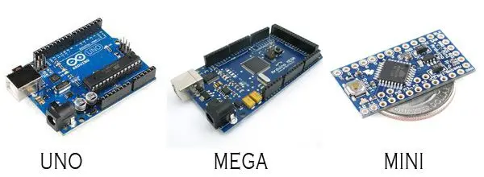
Arduino es una plataforma de electrónica de código abierto compuesta por dos partes inseparables: una placa con microcontrolador (el cerebro físico) y el Arduino IDE (el software donde escribís el programa). Juntas permiten que cualquier persona, sin ser ingeniero electrónico, pueda hacer que un circuito piense y reaccione al mundo real.
La idea central es sencilla: el microcontrolador puede leer entradas del mundo físico —un botón presionado, la temperatura, luz, distancia— y convertirlas en salidas —encender un LED, mover un motor, mostrar datos en pantalla. Vos escribís las reglas de ese comportamiento en el programa.
Arduino nació en 2005 en el Instituto de Diseño Interaction de Ivrea, Italia, con un objetivo claro: que estudiantes de diseño sin conocimientos de electrónica pudieran crear prototipos interactivos. Hoy es la plataforma de prototipado más popular del mundo, con millones de unidades vendidas y una comunidad enorme de proyectos y librerías gratuitas.
| Modelo | MCU | Voltaje | Pines dig. | RAM | Ideal para |
|---|---|---|---|---|---|
| Uno R3 | ATmega328P | 5V | 14 | 2 KB | Aprender, proyectos básicos |
| Nano | ATmega328P | 5V | 14 | 2 KB | Proyectos compactos |
| Mega 2560 | ATmega2560 | 5V | 54 | 8 KB | Proyectos grandes, muchos pines |
| Leonardo | ATmega32u4 | 5V | 20 | 2.5 KB | HID (teclado/mouse USB) |
| ESP32 | Xtensa LX6 | 3.3V | 34 | 520 KB | WiFi, BT, IoT, mayor potencia |
| ESP8266 | L106 | 3.3V | 11 | 80 KB | WiFi económico |
Aunque existen decenas de placas oficiales y variantes, para empezar no te compliques. La elección se resume en tres "clásicos" que cubren el 99% de las necesidades de iniciación:
| Modelo | I/O Digitales | Ent. Analógicas | Sal. PWM | UART | Memoria Flash | Precio aprox. |
|---|---|---|---|---|---|---|
| Uno R3 | 14 (6 PWM) | 6 | 6 | 1 | 32 KB | ~7 USD |
| Nano V3 | 14 (6 PWM) | 8 | 6 | 1 | 32 KB | ~3 USD |
| Mega R3 | 54 (15 PWM) | 16 | 15 | 4 | 256 KB | ~12 USD |
| Mini 05 | 14 (6 PWM) | 8 | 6 | 1 | 32 KB | ~2.5 USD |
| ESP32 | 34 | 18 (12-bit) | 16 | 3 | 4 MB | ~4 USD |
- Arduino UNO: El estándar. Tamaño perfecto para manejarlo con las manos, robusto y compatible con la mayoría de accesorios (Shields). Es el más documentado del mundo.
- Arduino Nano: Básicamente un UNO "encogido". Misma potencia, tamaño minúsculo — ideal para pinchar directamente en una protoboard y para proyectos finales pequeños.
- Arduino Mega: La bestia. Más grande, más memoria, muchísimas más entradas y salidas. Para impresoras 3D, brazos robóticos o proyectos complejos que se quedan cortos con el UNO.
- ESP32: Microcontrolador más potente con WiFi y Bluetooth integrado. 3.3V — no tolera 5V en sus pines. Ideal para IoT y cuando necesitás conectividad.
En el mundo de la programación, cuando aprendés un lenguaje nuevo, la tradición dice que lo primero que hacés es escribir un programa que diga "Hola Mundo" en la pantalla. En el mundo de la electrónica y Arduino, nuestro "Hola Mundo" no es texto. Es algo mucho más físico: hacer parpadear una luz.
Todo programa de Arduino se llama sketch. Lo mejor de todo es que para este primer sketch no necesitás conectar nada todavía — vamos a usar el pequeño LED que ya viene integrado en la propia placa Arduino, conectado al pin 13.
LED_BUILTIN.Abrí el Arduino IDE. Si creás un archivo nuevo (Archivo → Nuevo), vas a ver que no está vacío. Arduino siempre te da un esqueleto básico con dos funciones que siempre deben existir. Son el corazón de cualquier programa:
void setup() { // Se ejecuta UNA SOLA VEZ al encender o reiniciar } void loop() { // Se ejecuta INDEFINIDAMENTE, en bucle }
Esta función se ejecuta una sola vez, justo cuando encendés el Arduino o pulsás el botón Reset. Es el momento de "preparar la mochila antes de ir al colegio": acá configurás qué pines vas a usar como entrada o salida, iniciás comunicaciones, etc. Una vez ejecutada, no se vuelve a mirar (hasta que reiniciés la placa).
Como su nombre indica (loop = bucle), el código que escribas acá se va a repetir infinitamente, una y otra vez, a la máxima velocidad posible, hasta que desconectés la corriente. Es tu rutina diaria: levantarse, comer, dormir… y vuelta a empezar. Acá va la lógica de tu proyecto: leer sensores, tomar decisiones, activar salidas.
Para probar el funcionamiento vamos a usar uno de los ejemplos incluidos en el IDE. Abrí Archivo → Ejemplos → 01.Basics → Blink. Vas a ver un código similar al siguiente:
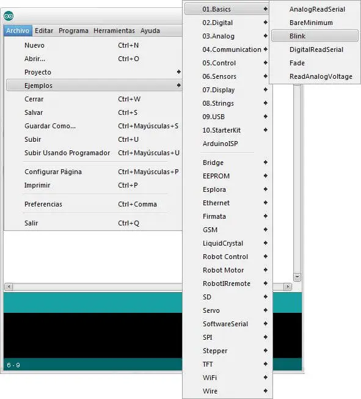
Archivo → Ejemplos → 01.Basics → Blink
const int pinLED = 13; // asignar variable led como 13 void setup() { pinMode(pinLED, OUTPUT); // definir pin 13 como salida } void loop() { digitalWrite(pinLED, HIGH); // encender LED delay(1000); // esperar un segundo digitalWrite(pinLED, LOW); // apagar LED delay(1000); // esperar un segundo }
Este ejemplo enciende y apaga un LED cada segundo. El LED empleado está integrado en muchas de las placas Arduino (UNO, MEGA, etc.) conectado físicamente al PIN 13. La función de cada línea está comentada a la derecha.
Para este primer programa usamos tres funciones esenciales que vas a usar el 90% del tiempo:
| Función | Qué hace | Parámetros |
|---|---|---|
pinMode(pin, modo) | Le dice al Arduino cómo debe comportarse un pin | pin: número · modo: OUTPUT o INPUT |
digitalWrite(pin, estado) | Cambia el estado de un pin configurado como salida | pin: número · estado: HIGH (5V) o LOW (0V) |
delay(ms) | Pausa el programa el tiempo indicado | milisegundos (1000 = 1 segundo) |
- pinMode: va casi siempre en el
setup(). Al ponerOUTPUTestás diciendo "Arduino, prepárate para enviar voltaje por este pin". - digitalWrite HIGH: pone 5 Voltios en el pin → enciende la corriente.
- digitalWrite LOW: pone 0 Voltios (GND) en el pin → apaga la corriente.
Primero conectá la placa Arduino al PC mediante el cable USB. Los primeros modelos usaban un USB A-B (el mismo de las impresoras antiguas), pero otros modelos usan mini, micro o USB-C. No hace falta cable de alimentación adicional — el USB es suficiente para programar.
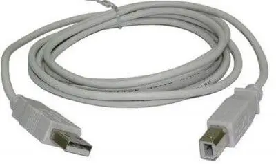
Cable USB A-B — el mismo que usan las impresoras antiguas
A continuación, en el IDE seleccioná el modelo de tu placa y el puerto COM al que está conectada:
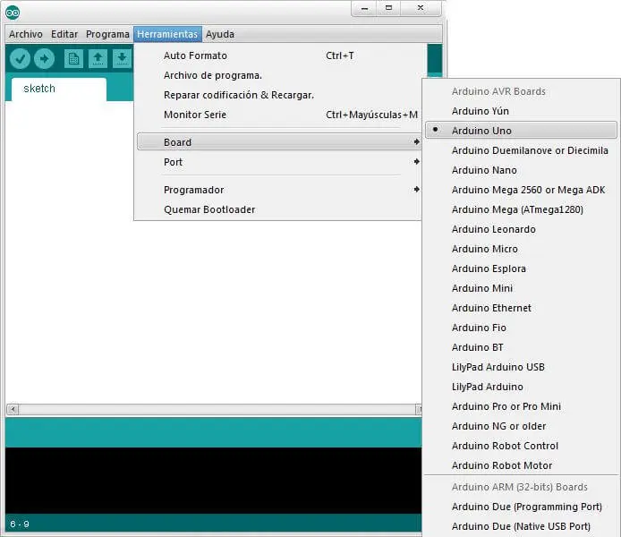
Herramientas → Placa → seleccioná tu modelo (ej: Arduino UNO)
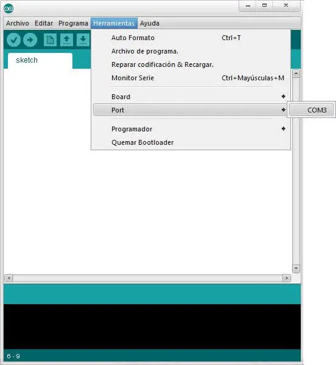
Herramientas → Puerto → el COMx que aparece al conectar la placa
COM1, COM3… · En Linux será del estilo /dev/ttyACM0. Si no aparece ningún puerto, instalá el driver CH340 o FTDI según tu placa.Con la placa y el puerto seleccionados, hacé clic en el botón → (Subir) para compilar y enviar la programación a la placa. Los LEDs TX/RX de la placa van a parpadear mientras se transfiere el programa. Tras unos segundos, la pantalla inferior del IDE debería mostrar "Subido correctamente".
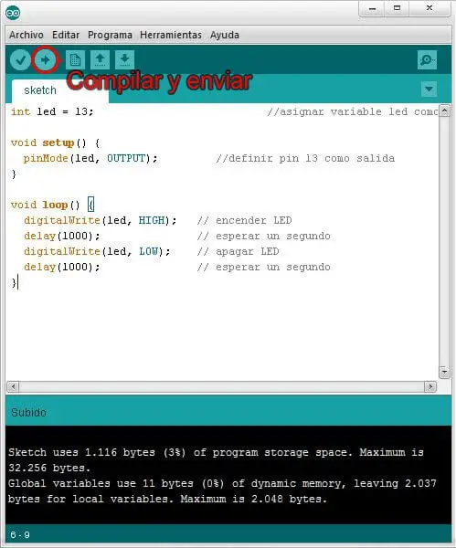
Clic en → para compilar y subir. La barra inferior muestra el progreso y uso de memoria
Para conectar componentes a Arduino necesitás combinar electrónica y programación. Antes de escribir código que controle componentes reales, hay que entender tres magnitudes fundamentales y las reglas que las relacionan.
| Magnitud | Símbolo | Unidad | Qué es |
|---|---|---|---|
| Voltaje (Tensión) | V | Voltio [V] | La energía que mueve los electrones. En Arduino trabajamos con 5V o 3.3V. |
| Corriente | I | Amperio [A] | La cantidad de electrones que fluyen por segundo. Los pines de Arduino soportan máximo 40 mA (recomendado 20 mA). |
| Resistencia | R | Ohm [Ω] | La oposición al paso de corriente. Se usa para proteger componentes como LEDs. |
Ley de Ohm — la relación entre las tres magnitudes:
V = I × R // tensión = corriente × resistencia I = V / R // corriente = tensión / resistencia R = V / I // resistencia = tensión / corriente // Ejemplo: calcular resistencia para un LED // Vcc=5V, Vled=2V, Iled=20mA → R = (5-2) / 0.020 = 150 Ω
Leyes de Kirchhoff — en un circuito en serie, la suma de caídas de tensión es igual a la tensión de alimentación. En paralelo, la tensión en todos los ramas es la misma.
La electricidad siempre necesita un circuito cerrado: los electrones tienen que salir de la fuente de energía, hacer su trabajo y volver. Para eso existen dos puntos:
- 5V / VCC: el punto de salida, donde hay mucha energía (presión alta).
- GND (Ground/Tierra): el punto de retorno, el nivel cero (el desagüe).
El Arduino tiene varios pines GND repartidos por la placa. Todos son iguales y están conectados entre sí internamente. El circuito siempre debe cerrarse a GND.
Si conectás un cable directo de 5V a GND sin nada en el medio, los electrones encuentran un camino libre sin resistencia — "una autopista vacía". La placa se calienta, huele a quemado y se produce un Cortocircuito.
- Corriente máxima por pin digital: 40 mA (recomendado 20 mA)
- Corriente total de todos los pines juntos: 200 mA
- Tensión en pines analógicos: 0 a 5V — nunca superar
Entender qué hace cada parte de tu Arduino te ayuda a saber por qué las cosas funcionan (o no funcionan) cuando conectás componentes. Vamos parte por parte.
La placa puede recibir energía de tres formas distintas:
- Puerto USB: permite cargar el código desde la computadora y alimenta la placa con los 5V del USB. Es lo que van a usar el 99% del tiempo al empezar.
- Jack DC / Barril: conector negro redondo para pilas, baterías o adaptadores de corriente. El voltaje recomendado es 7V a 12V.
- Pines Vin y GND: si la batería no tiene conector Jack, conectan los cables directamente aquí (+ a Vin, − a GND). Mismo voltaje que el Jack.
Es el chip negro y alargado que domina el centro de la placa. Normalmente un ATmega328p. Ahí es donde se guarda el código y donde se toman las decisiones. Es el cerebro de la placa.
Son las tiras de agujeritos negros en los bordes, agrupados en el bloque marcado como POWER. Arduino les da energía para alimentar sensores y LEDs:
- 5V: proporciona 5 Voltios estables.
- 3.3V: proporciona 3.3 Voltios (para componentes más delicados como el ESP8266).
- GND (Ground/Tierra): el negativo. Hay varios pines GND repartidos por la placa — todos son iguales y están conectados entre sí. El circuito siempre debe cerrarse a GND.
Van a ver una fila larga numerada del 0 al 13. Son los pines digitales y pueden funcionar de dos formas:
- Como SALIDA (Output): para encender o apagar cosas (0V o 5V).
- Como ENTRADA (Input): para leer si un botón está pulsado o no.
Los pines 3, 5, 6, 9, 10 y 11 tienen un símbolo ondulado ~. Son pines PWM (Pulse Width Modulation): pueden encenderse y apagarse tan rápido que simulan voltajes intermedios. Los usamos para regular intensidad de LEDs o velocidad de motores.
Abajo a la derecha están los pines marcados como ANALOG IN (A0, A1... A5). A diferencia de los digitales (que solo entienden "Todo o Nada"), estos pines pueden medir voltajes con decimales (0.3V, 2.7V, etc.). Devuelven un valor de 0 a 1023. Son los que se usan para leer sensores analógicos: temperatura, luz, distancia, potenciómetros...
| Componente | Descripción |
|---|---|
| Cristal 16 MHz | Oscilador de referencia del microcontrolador |
| Regulador 5V | Convierte el voltaje del Jack DC (7–12V) a 5V estables |
| Botón RESET | Reinicia el programa desde el principio |
| LED L (pin 13) | LED integrado en la placa, conectado al pin 13 |
| LEDs TX/RX | Parpadean al transferir datos por el puerto Serial |
| ICSP Header | Conector para programación avanzada in-circuit |
El esquema de patillaje (pinout) muestra qué función tiene cada pin de la placa. Cada pin puede tener múltiples funciones: digital básica, PWM, comunicación (SPI, I²C, UART), interrupciones, etc.
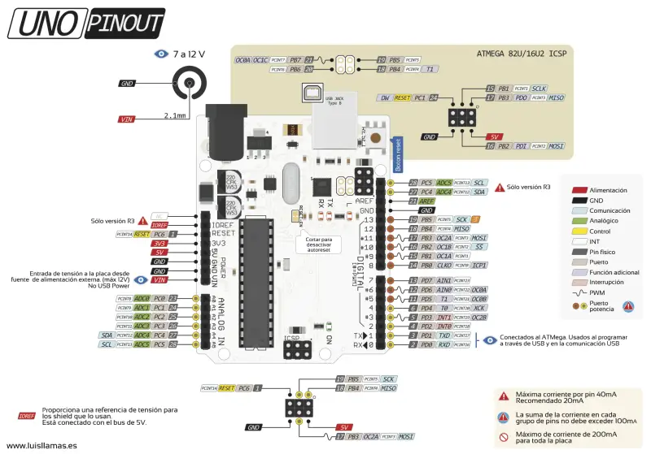
Esquema completo de pines del Arduino UNO R3
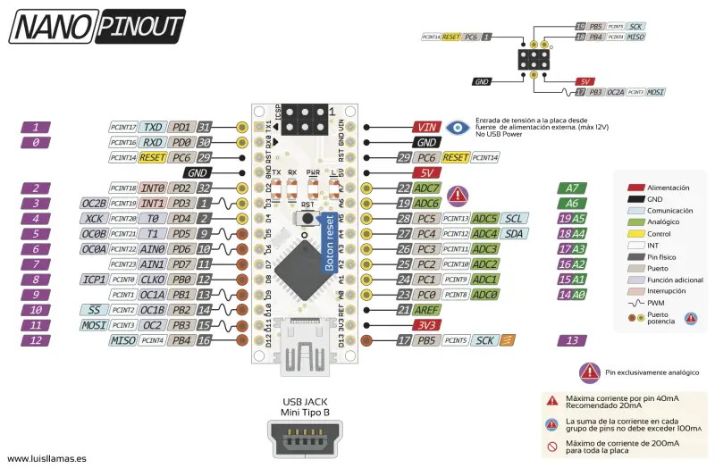
Esquema completo de pines del Arduino Nano V3
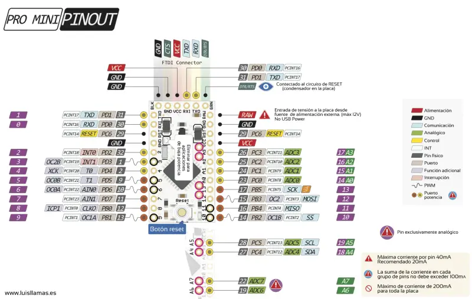
Esquema completo de pines del Arduino Pro Mini
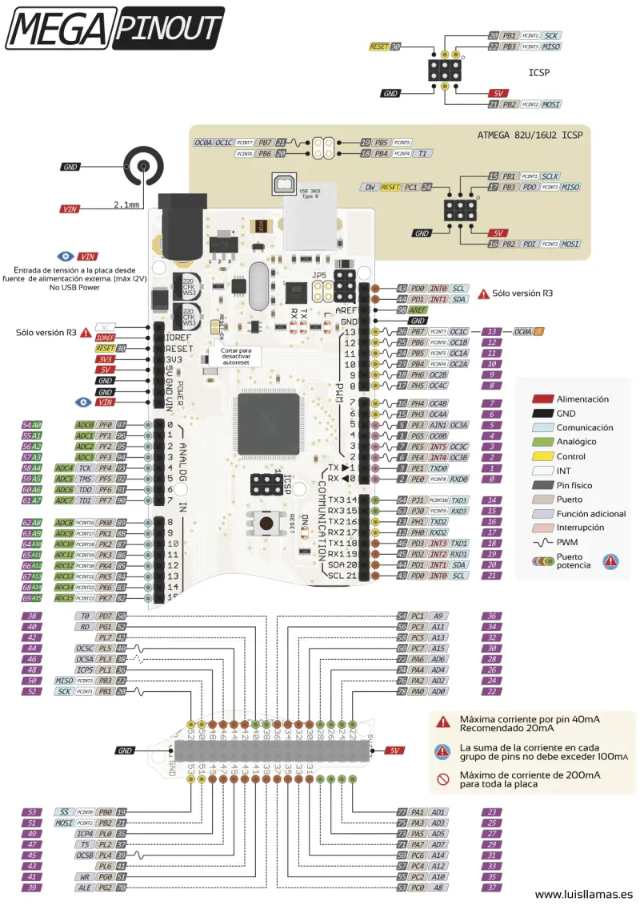
Esquema completo de pines del Arduino Mega 2560
| Pin | Función digital | Función alternativa |
|---|---|---|
| 0 (RX) | Digital I/O | UART RX — recibe Serial |
| 1 (TX) | Digital I/O | UART TX — transmite Serial |
| 2 | Digital I/O | Interrupción externa INT0 |
| 3~ | Digital I/O + PWM | Interrupción externa INT1 |
| 5~, 6~, 9~, 10~, 11~ | Digital I/O + PWM | analogWrite() para regular intensidad |
| 10~ | Digital I/O + PWM | SPI SS |
| 11~ | Digital I/O + PWM | SPI MOSI |
| 12 | Digital I/O | SPI MISO |
| 13 | Digital I/O + LED | SPI SCK |
| A0–A5 | Analógico ADC (0–1023) | También usables como digital |
| A4 (SDA) | Analógico / I²C | I²C Data |
| A5 (SCL) | Analógico / I²C | I²C Clock |
Arduino puede recibir energía de varias formas. Cada una tiene sus reglas. Entenderlas evita quemar la placa.
Es la forma más común al empezar. El cable USB-B hace dos cosas a la vez:
- Permite cargar el código desde la computadora.
- Alimenta la placa con los 5V del USB (del puerto de la PC, cargador de celular o powerbank).
Es el conector negro redondo en una esquina de la placa. Está pensado para conectar pilas, baterías o adaptadores de corriente de pared. Aquí entra en juego el Regulador de Voltaje de la placa: si meten 9V por el Jack, el regulador se encarga de "recortar" el sobrante y convertirlo en 5V estables.
- Rango de voltaje recomendado: 7V a 12V.
- ¿Por qué mínimo 7V? El regulador necesita un mínimo por encima de 5V para poder regular correctamente. Con 6V entraría justo y la salida sería inestable.
- ¿Por qué máximo 12V? La diferencia entre el voltaje de entrada y 5V se disipa como calor. Con 12V y 500mA el regulador disipa (12-5)×0.5 = 3.5W — se calienta mucho. Con 9V el calor es menor.
- Fuente típica: la pila cuadrada de 9V, o un portapilas con 6 pilas AA.
Si miran los pines de POWER, van a ver uno llamado VIN (Voltage Input). Este pin está conectado internamente al Jack DC.
- Uso: si la batería no tiene conector Jack sino dos cables sueltos (Rojo y Negro), pueden conectarlos aquí.
- Conexión: cable Positivo (+) va a VIN. Cable Negativo (−) va a GND.
- Voltaje: el mismo que el Jack: 7V a 12V.
El pin 5V está pensado para ser una SALIDA (para alimentar sensores), no una entrada. Si meten energía por ahí se saltean el regulador de voltaje y las protecciones de seguridad.
- Si la fuente da 5.5V → pueden quemar el chip.
- Si hay un pico de tensión → adiós Arduino.
- Si conectan el USB a la vez → conflicto eléctrico.
Autonomía (horas) = Capacidad en mAh ÷ Consumo en mA
| Batería | Capacidad | Consumo Arduino | Autonomía aprox. |
|---|---|---|---|
| 9V alcalina | ~400 mAh | ~50 mA (solo) | ~8 hs |
| 6× AA (9V) | ~2000 mAh | ~100 mA (con sensores) | ~20 hs |
| LiPo 2S (7.4V) | ~2000 mAh | ~100 mA | ~20 hs |
| Power Bank USB | 5000–20000 mAh | ~50–200 mA | días |
| Batería | Tensión | Capacidad | Conexión | Ideal para |
|---|---|---|---|---|
| 9V alcalina | 9V | ~200–600 mAh | Jack DC | Pruebas cortas, poca autonomía |
| 4× AA (6V) | 6V | ~2000 mAh | Vin o Jack | Proyectos simples, económica |
| 6× AA (9V) | 9V | ~2000 mAh | Jack DC | Buena autonomía, bajo costo |
| LiPo 1S (3.7V) | 3.7–4.2V | 500–5000 mAh | Pin 5V + boost | Proyectos compactos con boost converter |
| LiPo 2S (7.4V) | 7.4–8.4V | variable | Vin o Jack | Robótica, buena autonomía |
| Power Bank USB | 5V | 5000–20000 mAh | USB | Proyectos portátiles, muy práctico |
// Autonomía (horas) = Capacidad_mAh / Consumo_mA // Arduino Uno en idle: ~50mA // Con sensores + LED: ~100–200mA // Ejemplo: 9V 600mAh / 100mA = 6 horas
Para manejar Arduino necesitás combinar electrónica y programación. Y la programación empieza con las variables. Una variable es un pequeño espacio en la memoria del Arduino que reservamos para guardar un dato. Como si fuera una caja de mudanza.
Para que el Arduino no se lie con tanta caja, necesitamos hacer dos cosas obligatorias al crearla:
- Ponerle una etiqueta (Nombre): para saber cómo pedirle ese dato después (
velocidad,brillo,pinLed). - Decirle qué cabe dentro (Tipo): no es lo mismo guardar un calcetín que una enciclopedia. En programación, tenemos que definir el Tipo de Dato antes de usarlo.
Aunque C++ tiene muchos tipos, para empezar solo necesitás dominar estos tres. Cubren el 99% de las necesidades iniciales:
| Tipo | Qué guarda | Rango | Ejemplos de uso |
|---|---|---|---|
| int | Números enteros (sin decimales) | -32,768 a 32,767 | Número de pines (int led = 13), contadores (int vueltas = 0), lecturas analógicas (0 a 1023) |
| float | Números decimales | ~6-7 dígitos significativos | Temperaturas (float temp = 23.5), cálculos con decimales |
| bool | Verdadero o Falso | true / false | Estados (bool encendido = true), flags de control |
int edad = 35; int pinLed = 13; float temperatura = 23.5; bool encendido = true;
Cuando creamos una variable, no siempre es visible para todo el código. Depende de dónde la escribamos. Esto se llama Ámbito de la variable.
Variables globales — las que declaramos fuera de cualquier función, normalmente al principio del todo del código (antes del setup):
- Visibilidad: todo el mundo (el
setup, elloopy cualquier otra función) puede verlas, leerlas y escribirlas. - Duración: Nunca mueren. Guardan su valor mientras el Arduino esté encendido.
Es como escribir un dato en la pizarra de la clase. Cualquiera que entre en el aula puede ver el número, borrarlo y escribir otro. El dato permanece ahí toda la clase.
Variables locales — las que declaramos dentro de una función (dentro de las llaves { }):
- Visibilidad: solo la función donde viven puede verlas.
- Duración: se crean al entrar a la función y se destruyen al salir.
Queremos contar cuántas veces parpadea un LED:
// --- VARIABLE GLOBAL --- // Está fuera. Es la "Pizarra". // Necesitamos que recuerde la cuenta vuelta tras vuelta. int contadorTotal = 0; void setup() { Serial.begin(9600); } void loop() { // --- VARIABLE LOCAL --- // Está dentro. Es la "Libreta". // Se crea de nuevo en CADA vuelta del loop. int milisegundosEspera = 500; // Aumentamos la cuenta global contadorTotal = contadorTotal + 1; Serial.print("Parpadeo numero: "); Serial.println(contadorTotal); delay(milisegundosEspera); // Al llegar a esta llave de cierre '}', la variable // 'milisegundosEspera' SE DESTRUYE. // Pero 'contadorTotal' SOBREVIVE. }
Arduino no admite espacios en los nombres. Convenciones:
int numero led = 13;❌ Error fatal (espacio).int numero_led = 13;✅ Bien (snake_case).int numeroLed = 13;✅ Mejor (camelCase, el estándar de Arduino).
Y sean descriptivos con los nombres:
int x = 13;😐 ¿Qué es x?int pinLedRojo = 13;😊 Profesional.
const para valores que no cambian: const int PIN_LED = 13; — el compilador optimiza y no ocupa RAM dinámica.| Tipo | Tamaño | Rango |
|---|---|---|
| bool | 1 byte | true / false |
| byte | 1 byte | 0 – 255 |
| int | 2 bytes | -32768 – 32767 |
| unsigned int | 2 bytes | 0 – 65535 |
| long | 4 bytes | ±2.1 × 10⁹ |
| unsigned long | 4 bytes | 0 – 4.3 × 10⁹ (ideal para millis()) |
| float | 4 bytes | decimales, ~6-7 dígitos |
Ya sabemos guardar datos en variables. Pero guardar datos sirve de poco si no hacemos nada con ellos. La potencia de un ordenador (y tu Arduino es uno pequeñito) reside en su capacidad para calcular cosas muy muy rápido.
Calcular no es solo sumar números; también es comparar cosas ("¿Es esto mayor que aquello?") y tomar decisiones lógicas ("Si pasa esto Y lo otro"). Para ello usamos los operadores. Vamos a enseñar a nuestro Arduino a sumar, restar y pensar.
En programación, el signo = se llama Operador de Asignación. Significa "meter este valor dentro de esta variable".
int numero = 5; // Significa: Coge el valor 5 y guárdalo dentro de la caja llamada numero
Arduino sabe hacer cuentas básicas con las variables int y float. Los símbolos son casi los que esperás, con un par de cambios:
| Operación | Símbolo | Ejemplo | Resultado si A=10, B=2 |
|---|---|---|---|
| Suma | + | int suma = a + b; | 12 |
| Resta | - | int resta = a - b; | 8 |
| Multiplicación | * | int mult = a * b; | 20 |
| División | / | int div = a / b; | 5 |
| Resto (Módulo) | % | int resto = a % b; | 0 |
Cuidado con la división. Si estás usando números enteros (int), Arduino no puede usar decimales (porque estás usando enteros, claro). En la vida real da 2.5. En Arduino, como la caja resultado es entera, corta los decimales y los tira. El resultado será 2.
int a = 5; int b = 2; int resultado = a / b; // ¿Cuánto da? → 2 (corta el .5)
float para todo.float resultado = (float)a / b; → da 2.5Existen algunos "atajos" para las operaciones más comunes. Por ejemplo imaginá que querés contar vueltas. Lo normal sería: vueltas = vueltas + 1; (Coge lo que valía vueltas, súmale 1 y guardalo otra vez). En Arduino vás a ver esto escrito así:
vueltas++;— Suma 1 a la variable. (Incremento)vueltas--;— Resta 1 a la variable. (Decremento)vueltas += 5;— Suma 5 a lo que ya hubiera. (Es igual avueltas = vueltas + 5)
for.Ahora que sabemos calcular, queremos preguntar. Estas operaciones no devuelven un número, devuelven una respuesta de Verdadero (true) o Falso (false). Son la base de la sentencia if.
| Pregunta | Símbolo | Ejemplo | Significado |
|---|---|---|---|
| Igualdad | == | a == 5 | ¿Vale 'a' exactamente 5? |
| Desigualdad | != | a != 5 | ¿Es 'a' distinto de 5? |
| Menor | < | a < 10 | ¿Es 'a' más pequeño que 10? |
| Mayor | > | a > 10 | ¿Es 'a' más grande que 10? |
| Menor o igual | <= | a <= 10 | ¿Es 10 o menos? |
| Mayor o igual | >= | a >= 10 | ¿Es 10 o más? |
if (a = 5) → MAL. Estás guardando un 5 en 'a' y Arduino se lía.if (a == 5) → BIEN. Estás comparando.A veces una sola pregunta no basta. Queremos preguntar cosas como "¿Es de día Y tengo sueño?". Para eso unimos comparaciones con la lógica:
| Operador | Símbolo | Significado | Ejemplo |
|---|---|---|---|
| AND | && | Las DOS condiciones deben cumplirse | if (dia && sueño) |
| OR | || | Con que UNA se cumpla alcanza | if (calor || lluvia) |
| NOT | ! | Invierte el resultado | if (!botonPulsado) |
Vamos a juntar todo en un ejemplo real. Queremos una variable que cuente del 0 al 10. Cuando llegue a 10, que vuelva a 0. Y solo imprimimos los números pares mayores que 5:
int contador = 0; // Usamos Asignación (=) void setup() { Serial.begin(9600); } void loop() { // 1. Aritmética: Sumamos 1 contador++; // 2. Comparación: ¿Nos hemos pasado? if (contador > 10) { // 3. Asignación: Reiniciamos contador = 0; Serial.println("¡Vuelta a empezar!"); } // 4. Lógica compuesta: Solo imprimimos si es par Y mayor que 5 // (El operador % 2 == 0 nos dice si es par) if (contador > 5 && (contador % 2 == 0)) { Serial.print("Numero par alto: "); Serial.println(contador); } delay(500); }
De momento, nuestros programas han sido una lista de la compra: "Haz esto, luego espera, luego haz esto otro". El Arduino obedecía en orden, línea tras línea. Pero la verdadera inteligencia surge cuando somos capaces de adaptarnos a las circunstancias.
No siempre queremos que el LED parpadee. Quizás queremos que se encienda SOLO SI pulsamos un botón, o que se apague SI hay mucha luz. Hoy vamos a aprender la estructura más fundamental de la programación: la sentencia condicional if / else (es el momento en que tu Arduino aprende a tomar decisiones).
Imaginá que vas conduciendo y llegás a una bifurcación. Tenés que tomar una decisión basada en una condición:
- SI tengo gasolina, sigo conduciendo por la autopista.
- SI NO, me desvío a la gasolinera.
En programación, esto funciona exactamente igual. Le damos al Arduino una condición (una pregunta de Sí o No). Si la respuesta es Sí, ejecuta un bloque de código. Si es No, lo ignora (o hace otra cosa).
La estructura en C++ (el lenguaje de Arduino) es bastante intuitiva:
if (condicion) { // Código que se ejecuta si la condición es VERDADERA } else { // Código que se ejecuta si la condición es FALSA }
if: Significa "Si…".(): Dentro de los paréntesis va la pregunta.{}: Las llaves delimitan qué acciones ocurren.else: (Opcional) Significa "Si no…". Es lo que pasa si la condición no se cumple.
Para que el if funcione, necesitamos hacer preguntas cuya respuesta sea Verdadero (True) o Falso (False). Para ello usamos los operadores de comparación:
| Operador | Significado | Ejemplo |
|---|---|---|
| == | ¿Es igual a? | if (x == 5) |
| != | ¿Es distinto de? | if (x != 0) |
| < | Menor que | if (x < 10) |
| > | Mayor que | if (x > 10) |
| <= | Menor o igual | if (x <= 10) |
| >= | Mayor o igual | if (x >= 10) |
= sirve para asignar (meter un valor en una caja). Para comparar, debés usar el doble igual ==.a = 5 → "Guarda el 5 en la variable a".if (a == 5) → "¿Vale 'a' lo mismo que 5?"Vamos a retomar el montaje clásico: un botón conectado al Pin 2 y el LED integrado en el Pin 13. Queremos que: si pulso el botón, el LED se encienda. Si no, se apague.
void setup() { pinMode(13, OUTPUT); pinMode(2, INPUT_PULLUP); // lo veremos en su momento } void loop() { // 1. Leemos el botón int estado = digitalRead(2); // 2. Tomamos la decisión if (estado == LOW) { // Si la condición es cierta (está pulsado) digitalWrite(13, HIGH); // Encendemos LED } else { // Si la condición es falsa (no está pulsado) digitalWrite(13, LOW); // Apagamos LED } }
Imaginá que querés una "Luz de hombre muerto" (se apaga si pulsas, se enciende si soltás). Solo tenés que cambiar la lógica dentro de las llaves, o cambiar la pregunta:
if (estado == HIGH) { // Si el botón está SUELTO digitalWrite(13, HIGH); } else { digitalWrite(13, LOW); }
¿Qué pasa si queremos condiciones más complejas? Podemos meter un if dentro de otro if. Por ejemplo: "Si pulso el botón… y además el LED estaba apagado… entonces enciéndelo" (comportamiento tipo toggle):
const int pinBoton = 2; const int pinLed = 13; void setup() { pinMode(pinLed, OUTPUT); pinMode(pinBoton, INPUT); } void loop() { // Primera pregunta: ¿El botón está pulsado? if (digitalRead(pinBoton) == HIGH) { // Si entramos aquí, es que el botón SÍ está pulsado. // Ahora hacemos la segunda pregunta (anidada): if (digitalRead(pinLed) == LOW) { // Si llegamos aquí, se cumplen las DOS condiciones: // 1. Botón pulsado 2. El LED estaba apagado digitalWrite(pinLed, HIGH); // ¡Encendemos el LED! } } delay(100); // Una pequeña pausa para estabilidad }
{ ... } podés escribir cualquier código válido: encender LEDs, esperar con delay, o hacer otra pregunta if.Con lo que hemos visto hasta ahora, si quisiéramos hacer parpadear un LED cinco veces, probablemente escribiríamos esto:
// encender apagar el LED digitalWrite(13, HIGH); delay(200); digitalWrite(13, LOW); delay(200); // encender apagar el LED digitalWrite(13, HIGH); delay(200); digitalWrite(13, LOW); delay(200); // ... y así hasta el cinco
Que funcionar, funciona, sí… Pero es un poco horrible. Primero, porque cansa escribirlo (y leerlo). Segundo, porque si de repente querés cambiar la velocidad, tenés que cambiarla en 20 sitios distintos. Y tercero, ¿y si querés que parpadee 1000 veces?
Precisamente una de las grandes virtudes de los ordenadores (y de Arduino) es que se les da genial repetir tareas. Para decirle a nuestra placa que repita algo muchas veces, usamos los Bucles. Hoy vamos a ver las dos herramientas fundamentales: el for y el while.
El bucle for sirve cuando sabemos exactamente cuántas veces queremos repetir algo. Su estructura se compone de tres partes separadas por punto y coma:
for (inicio; condicion; actualizacion) { // Código a repetir }
- Inicio: Creamos una variable contador (normalmente llamada
i) y le damos un valor inicial. Ej:int i = 0;(Empezamos en 0). - Condición: Preguntamos si debemos seguir repitiendo. Ej:
i < 5;(¿Es i menor que 5?). - Actualización: Cambiamos el contador al final de cada vuelta. Ej:
i++(Suma 1 a i).
En el ejemplo anterior, para parpadear un LED 5 veces, haríamos esto:
for (int i = 0; i < 5; i++) { digitalWrite(13, HIGH); delay(200); digitalWrite(13, LOW); delay(200); }
El Arduino hará esto. Primero crea i = 0. Y luego empieza a repetir:
- ¿0 es menor que 5? SÍ → Parpadea y suma 1 a
i, es 1 - ¿1 es menor que 5? SÍ → Parpadea y suma 1
- ¿2 es menor que 5? SÍ → Parpadea y suma 1
- ¿3 es menor que 5? SÍ → Parpadea y suma 1
- ¿4 es menor que 5? SÍ → Parpadea y suma 1
- ¿5 es menor que 5? NO. Sale del bucle y continúa con el resto del programa.
A veces no sabemos cuántas veces tenemos que repetir algo. Solo sabemos que queremos hacerlo mientras se cumpla una condición. La estructura del while es más simple:
while (condicion) { // Código a repetir }
for, la variable se actualiza sola (i++). En el while, vos sos responsable de que la condición cambie en algún momento dentro del bucle. Si la condición siempre es verdadera, el Arduino se quedará ahí atrapado sin hacer nada hasta que lo reiniciés (se "cuelga").// Mientras el botón NO esté pulsado... no hagas nada while (digitalRead(2) == HIGH) { // Esperamos... delay(100); } // Si llegamos aquí, es que alguien ha pulsado el botón encenderCohete();
delay porque si no, tu Arduino se pone como una moto a repetir el bucle a full velocidad. Es bueno darle un descansito.Para entender la potencia del for, vamos a hacer el efecto de luces más famoso de los años 80: el escáner frontal de KITT, el coche fantástico. Tenemos 5 LEDs en fila. Queremos que la luz se mueva de izquierda a derecha y vuelva, creando una estela. Sin bucles, tendríamos que escribir decenas de digitalWrite. Con bucles, lo haremos en unas pocas líneas.
Montaje: Conectá 5 LEDs (con sus resistencias) a los pines digitales consecutivos: 2, 3, 4, 5 y 6. Alinealos en la protoboard.
void setup() { // Configurar pines del 2 al 6 como SALIDA // En vez de escribir 5 líneas pinMode, usamos un bucle for (int i = 2; i <= 6; i++) { pinMode(i, OUTPUT); } } void loop() { // --- IDA: De izquierda a derecha (Pines 2 al 6) --- for (int i = 2; i <= 6; i++) { digitalWrite(i, HIGH); // Encendemos el LED actual delay(100); // Esperamos un poquito digitalWrite(i, LOW); // Apagamos (para dar efecto de movimiento) } // --- VUELTA: De derecha a izquierda (Pines 5 al 3) --- // Nota: No empezamos en el 6 ni acabamos en el 2 para no repetir los extremos for (int i = 5; i >= 3; i--) { digitalWrite(i, HIGH); delay(100); digitalWrite(i, LOW); } }
A medida que los proyectos crecen, el loop() empieza a hacerse eterno: cada vez más largo, más difícil de leer y con mucho código repetido. Las funciones son la solución.
Una función es como una receta de cocina. La escribís una vez, le ponés un nombre y después la llamás cuando la necesitás. setup(), loop(), digitalWrite(), delay() — todas son funciones. Las primeras dos las escribe Arduino automáticamente; el resto las llamamos nosotros.
La estructura básica para definir una función es:
tipoDevuelto nombreFuncion(parametros) { // El código de la receta }
Un ejemplo sencillo: una función llamada parpadearTresVeces():
void setup() { pinMode(13, OUTPUT); } void loop() { // En lugar de escribir todo el código aquí, solo llamamos a la función parpadearTresVeces(); delay(2000); // Esperamos un poco parpadearTresVeces(); // ¡Podemos reutilizarla las veces que queramos! } // --- ZONA DE TUS FUNCIONES --- // (Normalmente se escriben después del loop) void parpadearTresVeces() { for(int i=0; i<3; i++) { digitalWrite(13, HIGH); delay(200); digitalWrite(13, LOW); delay(200); } }
- void: significa "vacío". Esta función hace cosas (enciende luces) pero no nos devuelve ningún resultado (no nos da un número).
- parpadearTresVeces: el nombre que le pusimos.
- (): paréntesis vacíos, porque no necesita información extra para funcionar.
- { ... }: el cuerpo de la función.
loop() queda limpísimo y es muy fácil de leer. Cualquiera que lea parpadearTresVeces() entiende qué pasa sin necesidad de ver los digitalWrite internos.La función anterior está bien, pero es un poco rígida. Siempre parpadea 3 veces. ¿Y si queremos que parpadee 5? ¿O 10? Podemos pasarle información a la función a través de los paréntesis. Esto se llama Parámetros de la función:
void parpadear(int numeroVeces) { for(int i=0; i < numeroVeces; i++) { digitalWrite(13, HIGH); delay(200); digitalWrite(13, LOW); delay(200); } } void loop() { parpadear(5); // Parpadea 5 veces delay(1000); parpadear(2); // Parpadea 2 veces }
Creamos una herramienta genérica que se adapta a lo que necesitemos.
Una librería no es más que un conjunto de funciones que podemos añadir a nuestro proyecto para no tener que reinventar la rueda. Gente muy lista ha dedicado su tiempo a escribir cientos de funciones súper útiles para controlar motores, pantallas, sensores complejos o conectarse a Internet. Eso es una Librería.
Cómo se usan — para usar una librería, primero tenemos que avisar a nuestro programa que la queremos incluir. Esto se hace con el comando #include:
#include <Servo.h> // Incluimos la "caja de herramientas" del Servo Servo miMotor; // Creamos nuestro objeto motor void setup() { miMotor.attach(9); // Le decimos que el motor está en el pin 9 } void loop() { // ¡Mirá qué fácil! No tenemos que saber cómo funcionan los pulsos eléctricos. // Solo usamos la función "write" que viene en la librería. miMotor.write(90); // Ponete a 90 grados delay(1000); miMotor.write(0); // Ponete a 0 grados delay(1000); }
Sin la librería, tendríamos que haber escrito decenas de líneas de código complejo con digitalWrite y microsegundos para mover ese motor. Con la librería, es una sola línea.
¿Dónde consigo librerías? — Arduino tiene un Gestor de Librerías integrado:
- Ir a Sketch → Include Library → Manage Libraries...
- Buscar lo que necesitan (ej: "DHT11" para temperatura, "NeoPixel" para luces de colores).
- Le dan a Install.
Una señal digital solo puede tener dos valores: LOW (0V) o HIGH (5V). El proceso de discretización toma la tensión del pin y la convierte a uno de esos dos estados usando un umbral: de 0 a 2,5V el Arduino lee LOW, de 2,5V a 5V lee HIGH. Nunca hay que superar el rango 0–5V o se daña el microcontrolador.
Cuando un sensor o dispositivo externo conecta el pin a 5V o a GND, el Arduino lee directamente con digitalRead(pin). La función devuelve HIGH o LOW y el pin trabaja en alta impedancia (~100 MΩ), lo que significa que prácticamente no consume corriente del sensor.
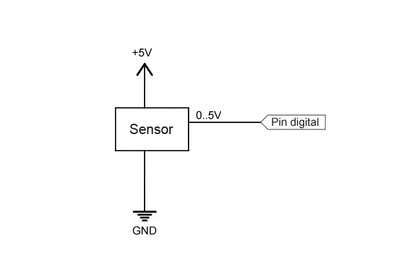
Sensor conectado a pin digital: el sensor entrega 5V o GND al pin, Arduino lee HIGH o LOW.
const int sensorPin = 4; int sensorValue; void setup() { pinMode(sensorPin, INPUT); Serial.begin(9600); } void loop() { sensorValue = digitalRead(sensorPin); // devuelve HIGH o LOW Serial.println(sensorValue); delay(500); }
Si la señal del sensor supera los 5V, no se puede conectar directo al pin. Se usa un divisor de tensión con R1 = 10 kΩ y R2 = 4,7 kΩ para reducir la tensión a un rango seguro (0–3,9V), que el Arduino puede interpretar sin problemas.
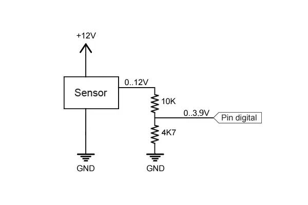
Divisor de tensión R1=10K / R2=4K7: reduce señales mayores a 5V a un rango seguro para el pin digital.
| Función | Uso |
|---|---|
pinMode(pin, INPUT) | Configura pin como entrada (requiere circuito externo) |
pinMode(pin, INPUT_PULLUP) | Entrada con resistencia pull-up interna (~50 kΩ) |
digitalRead(pin) | Lee el estado: devuelve HIGH (1) o LOW (0) |
INPUT_PULLUP para evitar pines flotantes.Una salida digital puede entregar solo dos tensiones: 0V (LOW) o 5V (HIGH). Todos los pines digitales son configurables como entrada o salida. El UNO y el Nano tienen 22 pines digitales, el Mini 20, y el Mega 70. Con pinMode(pin, OUTPUT) y digitalWrite(pin, HIGH/LOW) controlamos cualquier carga conectada.
El límite de corriente es crítico: máximo 40 mA por pin (se recomienda no superar 20 mA), y la suma total de todos los pines no debe exceder 300 mA. Para cargas que consumen más (motores, tiras LED, relés) se necesita un transistor BJT o MOSFET que actúe como interruptor: el pin Arduino da la orden, el transistor maneja la corriente real. Siempre usar resistencia ≥ 300 Ω en serie con LEDs.
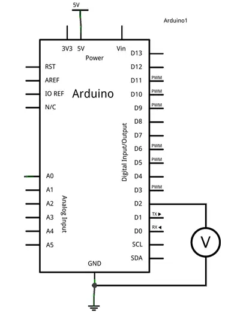
Medición de la salida digital con voltímetro: muestra 5V (HIGH) o 0V (LOW) según el estado del pin.
const int ledPin = 13; void setup() { pinMode(ledPin, OUTPUT); Serial.begin(9600); } void loop() { if (Serial.available()) { char c = Serial.read(); if (c == '1') digitalWrite(ledPin, HIGH); // enciende if (c == '0') digitalWrite(ledPin, LOW); // apaga } }
| Parámetro | Valor |
|---|---|
| Corriente máxima por pin | 40 mA (recomendado: 20 mA) |
| Corriente total todos los pines | < 300 mA |
| Resistencia mínima con LED | ≥ 300 Ω |
| Cargas > 40 mA | Transistor BJT o MOSFET obligatorio |
- UNO / Nano: 22 pines digitales (D0–D13 + A0–A5 usables como digitales)
- Pro Mini: 20 pines digitales
- Mega: 70 pines digitales
A diferencia de las entradas digitales, una señal analógica puede tomar cualquier valor entre 0V y 5V. El ADC (Conversor Analógico-Digital) del Arduino convierte esa tensión a un número entero. En el UNO es de 10 bits: divide el rango en 1024 niveles y devuelve un valor de 0 a 1023. La precisión es ±2,44 mV por paso (5V ÷ 1024 / 2).
La función analogRead(pin) no necesita pinMode() previo — los pines A0–A5 son exclusivamente de entrada analógica. La frecuencia de muestreo máxima es ~9.600 Hz. Para convertir el valor leído a voltaje real: V = lectura × (5.0 / 1023.0).
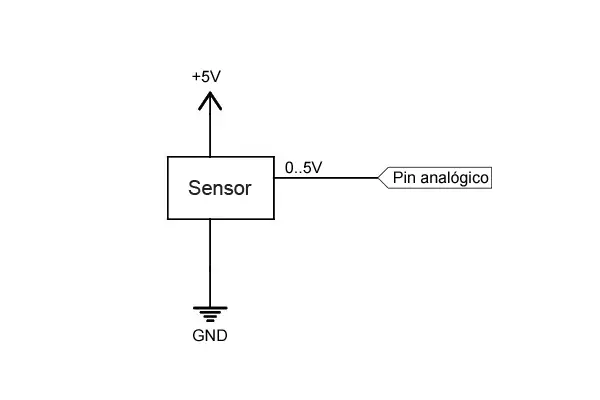
Sensor conectado a pin analógico: entrega una tensión variable entre 0V y 5V que el ADC convierte a 0–1023.
const int sensorPin = A0; int sensorValue; float voltage; void setup() { Serial.begin(9600); } void loop() { sensorValue = analogRead(sensorPin); // 0–1023 voltage = sensorValue * (5.0 / 1023.0); // convertir a voltaje Serial.print("Valor: "); Serial.print(sensorValue); Serial.print(" Voltaje: "); Serial.println(voltage); delay(500); }
| Modo | Rango | Precisión |
|---|---|---|
DEFAULT | 0–5V | ±2,44 mV/paso |
INTERNAL | 0–1,1V | ±0,54 mV/paso (más preciso) |
EXTERNAL | 0–V(Aref pin) | Referencia externa por pin Aref |
analogReference(INTERNAL); // rango 0–1.1V, mayor resolución para señales pequeñas analogReference(DEFAULT); // vuelve a 0–5V
Si la señal supera los 5V, se usa el mismo divisor con R1 = 10 kΩ y R2 = 4,7 kΩ para bajarla al rango seguro del ADC.
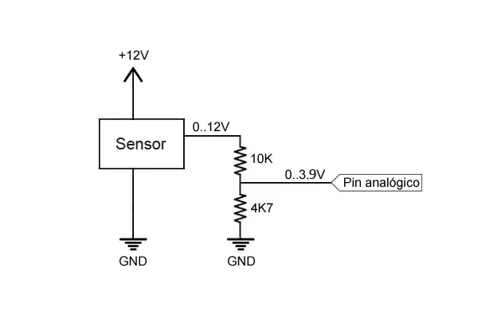
Divisor de tensión para entradas analógicas: reduce señales mayores a 5V al rango 0–3,9V aceptable por el ADC.
Arduino no genera señal analógica real. Lo que sí puede hacer es simularla con PWM (Modulación por Ancho de Pulso): en lugar de entregar un voltaje constante de 2,5V, el pin pulsa entre 5V y 0V a alta frecuencia. Si está el 50% del tiempo en HIGH, el voltaje promedio que percibe la carga es 2,5V. El parámetro que se controla se llama duty cycle (ciclo de trabajo), que es el porcentaje de tiempo que el pin está en HIGH.
Importante: el PWM no es una señal analógica. Durante el tiempo que está encendido, el pin sigue entregando los 5V completos de Vcc. Esto puede dañar dispositivos que no son compatibles con esa tensión. El voltaje promedio se calcula como: V_medio = Vcc × DutyCycle / 100. Es útil para controlar brillo de LEDs y velocidad de motores DC, pero no para alimentar circuitos que necesitan una tensión analógica estable.
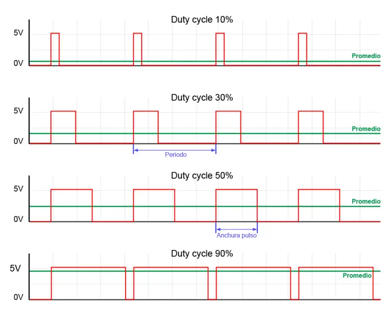
Distintos duty cycles: a mayor % de tiempo en HIGH, mayor voltaje promedio. 0% = 0V, 50% = 2,5V, 100% = 5V.
const int ledPin = 9; // pin PWM (marcado con ~ en la placa) void setup() { pinMode(ledPin, OUTPUT); } void loop() { analogWrite(ledPin, 0); // 0% duty → 0V delay(1000); analogWrite(ledPin, 128); // 50% duty → ~2.5V delay(1000); analogWrite(ledPin, 255); // 100% duty → 5V delay(1000); }
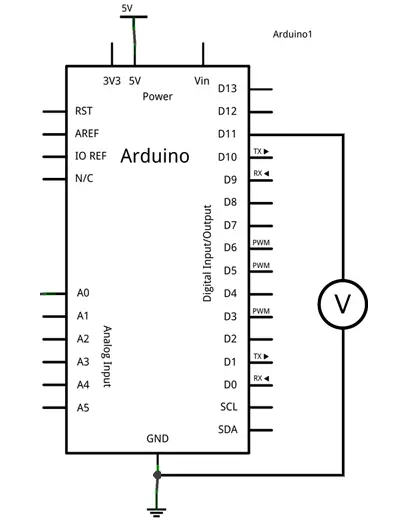
Voltímetro en salida PWM: muestra el voltaje promedio, no los pulsos individuales. A 50% duty cycle lee ~2,5V.
| Placa | Pines PWM | Resolución |
|---|---|---|
| UNO / Nano | 3, 5, 6, 9, 10, 11 (6 pines) | 8 bits → 0–255 |
| Mega | 2–13, 44–46 (15 pines) | 8 bits → 0–255 |
- La librería
Servo.husa el Timer1 → bloquea pines 9 y 10 en el UNO - Si usás Servo, los pines 9/10 dejan de funcionar como PWM
- Mover el servo a otro pin no soluciona esto — el Timer1 queda ocupado igual
La forma habitual de detectar un evento es el polling: preguntar repetidamente en el loop() si algo cambió. El problema es que si el loop() está ocupado con un delay() o cualquier otra tarea, puede perderse un evento corto. Además consume CPU constantemente aunque no pase nada.
La solución es una interrupción: se registra una función especial (ISR) y cuando ocurre el evento en el pin, el hardware pausa el programa al instante, ejecuta la ISR, y luego retoma exactamente donde estaba. No importa qué esté haciendo el loop() — la interrupción salta igual.
| Placa | Pines disponibles |
|---|---|
| UNO / Nano | Pin 2 (INT0), Pin 3 (INT1) |
| Mega | Pines 2, 3, 21, 20, 19, 18 (INT0–INT5) |
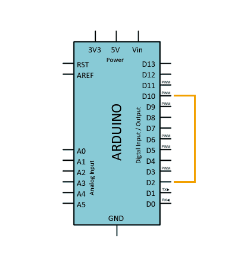
Pin 10 conectado al pin 2: el pin 10 genera una onda cuadrada que el pin 2 detecta como señal de interrupción.
const int emuPin = 10; // genera la onda (conectado a intPin) const int LEDPin = 13; const int intPin = 2; volatile int state = LOW; void setup() { pinMode(emuPin, OUTPUT); pinMode(LEDPin, OUTPUT); pinMode(intPin, INPUT_PULLUP); attachInterrupt(digitalPinToInterrupt(intPin), blink, CHANGE); } void loop() { digitalWrite(emuPin, HIGH); delay(150); digitalWrite(emuPin, LOW); delay(150); } void blink() { state = !state; digitalWrite(LEDPin, state); }
const int emuPin = 10; const int intPin = 2; volatile int ISRCounter = 0; int counter = 0; void setup() { pinMode(emuPin, OUTPUT); pinMode(intPin, INPUT_PULLUP); Serial.begin(9600); attachInterrupt(digitalPinToInterrupt(intPin), interruptCount, FALLING); } void loop() { digitalWrite(emuPin, HIGH); delay(1000); digitalWrite(emuPin, LOW); delay(1000); if (counter != ISRCounter) { counter = ISRCounter; Serial.println(counter); } } void interruptCount() { ISRCounter++; }
| Modo | Cuándo dispara |
|---|---|
RISING | Flanco ascendente: LOW → HIGH |
FALLING | Flanco descendente: HIGH → LOW |
CHANGE | Cualquier cambio de estado |
LOW | Mientras el pin esté en LOW (disparo continuo) |
- No recibe parámetros ni devuelve nada:
void nombreISR() { } - Debe ser lo más corta posible — sin
delay(), sinSerial.print() - Variables compartidas entre ISR y loop() deben ser
volatile millis()ymicros()no se actualizan dentro de la ISR
// Para leer variables de 4 bytes (long) de forma segura: noInterrupts(); long copia = miContador; // copia atómica interrupts(); // Desactivar/reactivar una interrupción específica: detachInterrupt(digitalPinToInterrupt(2)); attachInterrupt(digitalPinToInterrupt(2), miISR, FALLING);
Un LED (Light Emitting Diode) es un diodo que emite luz al ser atravesado por corriente eléctrica. Tiene polaridad: solo conduce en un sentido. La pata larga es el ánodo (+) y la corta el cátodo (–).
El LED no tiene resistencia interna significativa: una vez que supera su tensión de polarización (Vf), la corriente crece sin límite y lo destruye. Por eso siempre necesitás una resistencia en serie. La resistencia absorbe la diferencia de tensión: V_R = Vcc – Vf. Con la Ley de Ohm: R = (Vcc – Vf) / I.
Valor calculado y resistencia comercial E12 recomendada. Si no tenés el valor exacto, usá el inmediatamente superior.
| Color | Vf | 3.3V | 5V | 9V | 12V |
|---|---|---|---|---|---|
| 🔴 Rojo | 1.8–2.0V | 65→68Ω | 150→150Ω | 350→330Ω | 500→510Ω |
| 🟠 Naranja | 2.0–2.2V | 55→56Ω | 140→150Ω | 340→330Ω | 490→470Ω |
| 🟡 Amarillo | 2.0–2.2V | 55→56Ω | 140→150Ω | 340→330Ω | 490→470Ω |
| 🟢 Verde std | 2.0–2.2V | 55→56Ω | 140→150Ω | 340→330Ω | 490→470Ω |
| 🟢 Verde bright | 3.0–3.5V | — | 75→82Ω | 275→270Ω | 425→430Ω |
| 🔵 Azul | 3.0–3.5V | — | 75→82Ω | 275→270Ω | 425→430Ω |
| ⚪ Blanco | 3.0–3.5V | — | 75→82Ω | 275→270Ω | 425→430Ω |
| 🟣 UV | 3.3–3.8V | — | 60→68Ω | 260→270Ω | 410→390Ω |
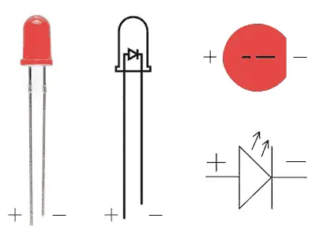
Pata larga = ánodo (+) · Pata corta = cátodo (–) · El lado plano marca el cátodo

Esquema eléctrico: Pin digital → resistencia → LED → GND
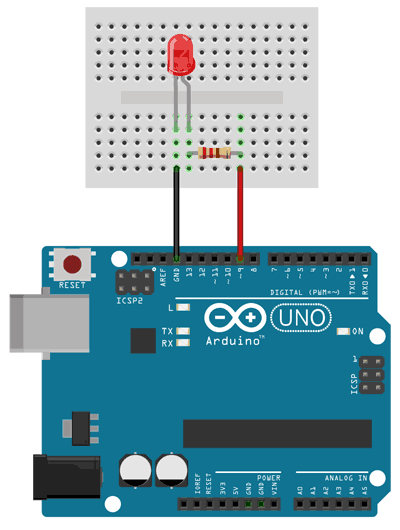
Montaje real en protoboard — la resistencia va en serie con el LED
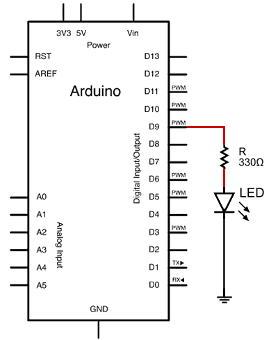
Esquema eléctrico: pin digital → resistencia 330Ω → ánodo LED → cátodo LED → GND.

Montaje real: la resistencia va en serie con el LED. Ánodo (pata larga) hacia la resistencia, cátodo (pata corta) hacia GND.
const int PIN_LED = 13; void setup() { pinMode(PIN_LED, OUTPUT); } void loop() { digitalWrite(PIN_LED, HIGH); // enciende delay(500); digitalWrite(PIN_LED, LOW); // apaga delay(500); }
Mandás un número del 1 al 9 por el Monitor Serie y el LED parpadea esa cantidad de veces.
const int ledPIN = 9; int option; void setup() { Serial.begin(9600); pinMode(ledPIN, OUTPUT); } void loop() { if (Serial.available() > 0) { option = Serial.read(); if (option >= '1' && option <= '9') { option -= '0'; // convierte char a número for (int i = 0; i < option; i++) { digitalWrite(ledPIN, HIGH); delay(100); digitalWrite(ledPIN, LOW); delay(200); } } } }
Mandás un número del 0 al 9 para controlar el brillo: 0 = apagado, 9 = máximo. El valor se multiplica × 25 para mapear al rango 0–225.
const int ledPIN = 5; // pin PWM ~ byte outputValue = 0; void setup() { Serial.begin(9600); pinMode(ledPIN, OUTPUT); } void loop() { if (Serial.available() > 0) { outputValue = Serial.read(); if (outputValue >= '0' && outputValue <= '9') { outputValue -= '0'; // char → número outputValue *= 25; // escala 0–9 a 0–225 analogWrite(ledPIN, outputValue); } } }
Para leer un pulsador, Arduino necesita que el pin tenga siempre una tensión de referencia definida. Sin ella el pin queda en estado de alta impedancia (pin flotante): cuando el pulsador está abierto el pin no está conectado a nada y capta interferencias electromagnéticas del ambiente, dando lecturas aleatorias e impredecibles.
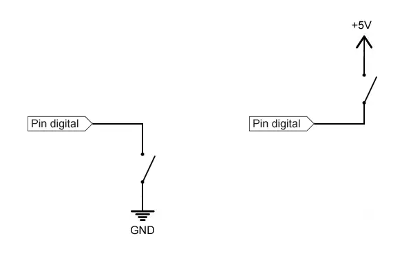
Izquierda: pulsador a GND — cuando está abierto el pin no tiene referencia → flotante. Derecha: pulsador a 5V — mismo problema.
Para evitar el pin flotante podría parecer lógico conectar el pin a 5V y también a GND a través del pulsador. Pero al cerrar el pulsador se genera un cortocircuito directo entre 5V y GND — corriente ilimitada, destrucción de componentes.
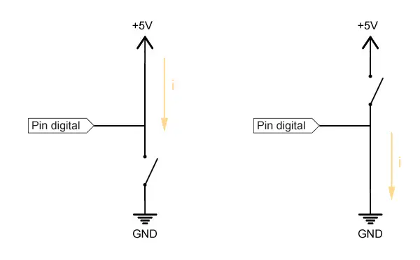
Al cerrar el pulsador, 5V y GND quedan directamente conectados → cortocircuito. Nunca hacer esto.
La solución es agregar una resistencia de referencia que mantenga el pin en un estado definido cuando el pulsador está abierto, pero que limite la corriente cuando está cerrado:
- Pull-Up: R desde 5V al pin → fuerza HIGH cuando abierto. Al pulsar: LOW
- Pull-Down: R desde GND al pin → fuerza LOW cuando abierto. Al pulsar: HIGH
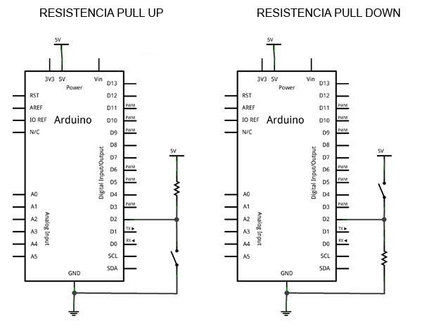
Izquierda: resistencia pull-up (HIGH en reposo, LOW al pulsar). Derecha: resistencia pull-down (LOW en reposo, HIGH al pulsar).
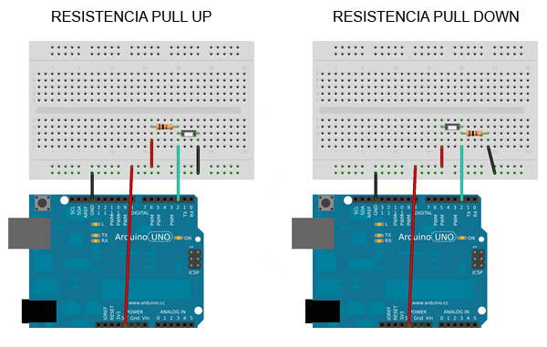
Montaje en protoboard de ambas configuraciones. Valores típicos de resistencia: 1kΩ a 10kΩ.
const int inputPin = 2; int value = 0; void setup() { Serial.begin(9600); pinMode(inputPin, INPUT); // resistencia externa obligatoria } void loop() { value = digitalRead(inputPin); if (value == HIGH) { Serial.println("Encendido"); } else { Serial.println("Apagado"); } delay(1000); }
Arduino tiene resistencias pull-up internas de ~30kΩ activables por software. Con INPUT_PULLUP no necesitás resistencia externa, pero la lógica queda invertida: HIGH = suelto, LOW = pulsado.
pinMode(inputPin, INPUT_PULLUP); // sin resistencia externa // LOW = pulsado (lógica invertida) if (digitalRead(inputPin) == LOW) { // pulsador presionado }
- Muy pequeña: mucha autoridad pero mayor consumo de corriente al pulsar
- Muy grande: poco consumo pero más susceptible a ruido e interferencias
- Valores típicos: 1kΩ a 10kΩ — buen equilibrio entre autoridad y consumo
Una resistencia variable cambia su valor óhmico según una magnitud física: la LDR (fotorresistencia) disminuye su resistencia al aumentar la luz, la NTC (termistor) disminuye con el aumento de temperatura. El problema es que Arduino no mide resistencia — solo tensión.
La solución es un divisor de tensión: la resistencia variable en serie con una resistencia fija (10kΩ). Arduino mide el punto medio. Cuando R_variable cambia, la tensión en el punto medio cambia proporcionalmente y podés inferir la magnitud física.
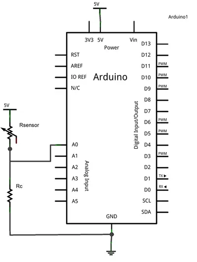
Divisor de tensión: Rsensor (arriba) en serie con Rc de calibración (abajo). El punto medio se conecta a A0. Al variar Rsensor, cambia la tensión en A0.
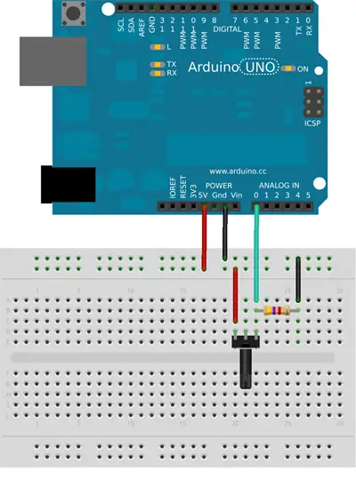
Montaje real: 5V → Rsensor → nodo A0 → Rc → GND.
Leemos la tensión en A0 y usamos la ecuación del divisor de tensión despejada para calcular Rsensor. Se usa aritmética de enteros (sin float) para ahorrar memoria y velocidad.
const int sensorPin = A0; const int Rc = 1500; // resistencia de calibración en Ω int V; // lectura ADC 0–1023 long Rsensor; // resistencia calculada en Ω void setup() { } void loop() { V = analogRead(sensorPin); // leer ADC Rsensor = 1024L * Rc / V - Rc; // calcular Rsensor // acá usás Rsensor: encender LED, imprimir, etc. delay(1000); }
- Suficientemente grande para limitar la corriente cuando Rsensor llega a 0Ω
- Suficientemente pequeña para no perder precisión de medición
- Regla práctica: Rc igual al valor de Rsensor a media escala del sensor
- Valores típicos: 1kΩ a 4.7kΩ para LDR y NTC comunes
Un potenciómetro es un divisor de tensión ajustable manualmente. Internamente tiene una pista resistiva con un contacto móvil (cursor/wiper) que se desplaza por ella. Tiene tres terminales: dos extremos fijos y uno variable (el cursor). Al conectar los extremos a 5V y GND, el cursor entrega cualquier tensión entre 0V y 5V según la posición.
Valores comunes de Rmax: 5kΩ, 10kΩ, 20kΩ. El potenciómetro ya es el divisor de tensión — no necesita resistencia fija adicional. El cursor es el punto medio del divisor interno.
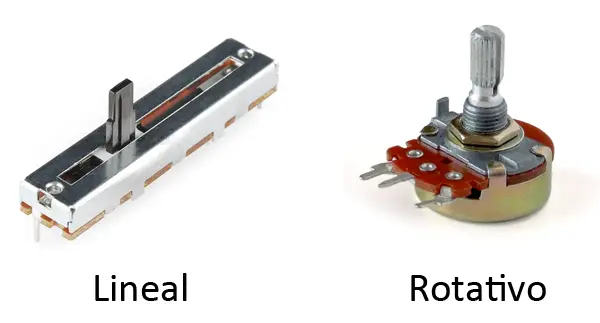
Tipos de geometría: lineal (deslizante) y rotativo (el más común en electrónica).
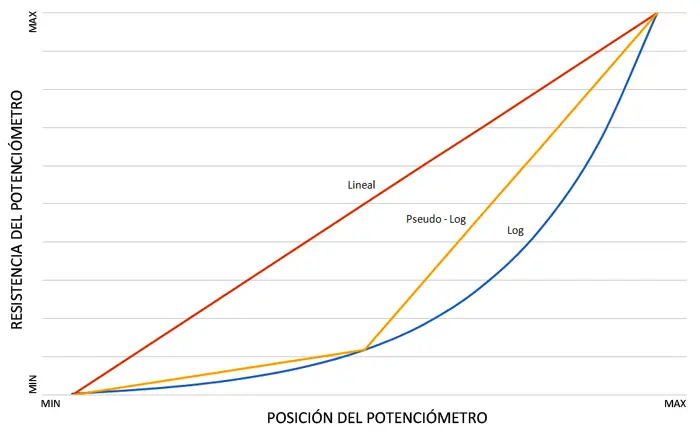
Lineal: resistencia proporcional al desplazamiento. Logarítmico: mayor resolución en valores bajos (audío, volumen). Pseudo-log: intermedio.
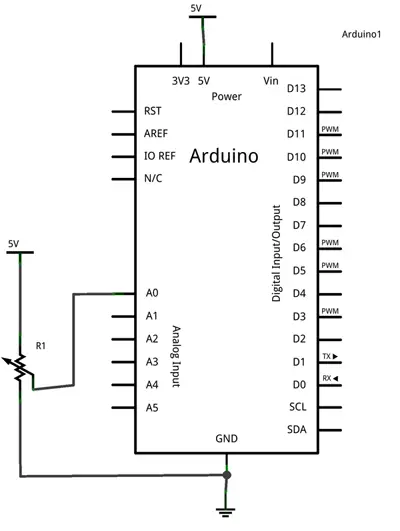
Terminal 1 → 5V · Terminal 2 (cursor) → A0 · Terminal 3 → GND. Sin resistencia adicional.
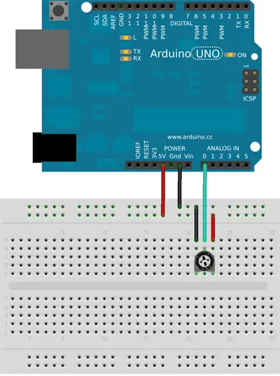
Montaje real: 5V (rojo) y GND (negro) a los extremos, cursor (verde) a la entrada analógica.
const int PIN_POT = A0; const int PIN_LED = 9; // pin PWM ~ void setup() { pinMode(PIN_LED, OUTPUT); Serial.begin(9600); } void loop() { int pot = analogRead(PIN_POT); // 0–1023 int brillo = map(pot, 0, 1023, 0, 255); // remapea a 0–255 analogWrite(PIN_LED, brillo); Serial.print("POT:"); Serial.print(pot); Serial.print(" Brillo:"); Serial.println(brillo); delay(50); }
#include <Servo.h> Servo miServo; void setup() { miServo.attach(9); } void loop() { int pot = analogRead(A0); int angulo = map(pot, 0, 1023, 0, 180); miServo.write(angulo); delay(15); }
map(valor, inMin, inMax, outMin, outMax) es la función más útil de Arduino para adaptar rangos. Transforma linealmente cualquier escala a otra — ideal siempre que conectés un sensor a una salida.Los contactos mecánicos de un pulsador no se cierran limpiamente: rebotan durante 10–50 ms generando múltiples señales HIGH/LOW antes de estabilizarse. Para el Arduino, una sola presión parece 5, 10 o 20 pulsaciones. Si estás contando clicks o haciendo toggle, el rebote genera comportamientos erráticos imposibles de debuggear sin saber que existen.
El debounce (antirrebote) consiste en ignorar los cambios de estado que ocurren demasiado rápido. La técnica correcta usa millis(): guardamos el momento del último cambio y solo aceptamos uno nuevo si pasaron más de 50 ms. Esto no bloquea el loop() — a diferencia del debounce con delay().
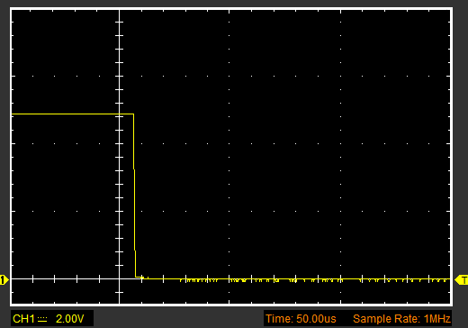
Señal de una salida digital de Arduino al cambiar de HIGH a LOW: flanco perfectamente limpio, sin ruido.
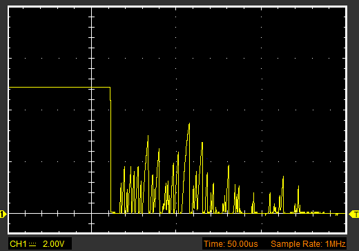
La misma transición generada por un pulsador mecánico: decenas de picos de ruido en los primeros microsegundos — cada pico puede disparar una interrupción.
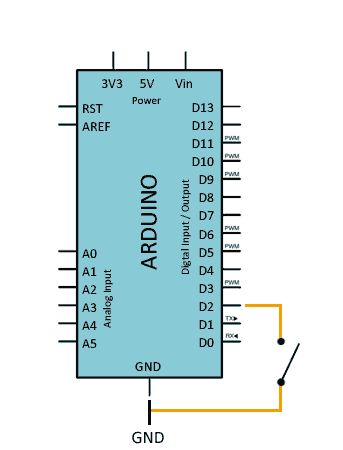
Circuito de prueba: pin 2 con Pull-UP interno y un cable a GND (o pulsador). Al conectar, se disparan múltiples interrupciones por el rebote.
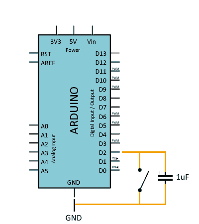
Debounce por hardware: condensador de 1µF en paralelo con el pulsador filtra el ruido. Es más robusto pero agrega componentes al circuito.
const int PIN_BTN = 2; const int PIN_LED = 13; const long DEBOUNCE = 50; int estadoBtn = HIGH; int estadoAnterior = HIGH; bool ledOn = false; unsigned long tUltimoCambio = 0; void setup() { pinMode(PIN_BTN, INPUT_PULLUP); pinMode(PIN_LED, OUTPUT); Serial.begin(9600); } void loop() { int lectura = digitalRead(PIN_BTN); if (lectura != estadoAnterior) tUltimoCambio = millis(); // registra el cambio if ((millis() - tUltimoCambio) > DEBOUNCE) { // lleva >50ms estable → cambio real if (lectura != estadoBtn) { estadoBtn = lectura; if (estadoBtn == LOW) { // flanco bajada = pulsación ledOn = !ledOn; digitalWrite(PIN_LED, ledOn); Serial.println("Click!"); } } } estadoAnterior = lectura; }
volatile bool pulsado = false; volatile unsigned long tISR = 0; void ISR_btn() { if (millis() - tISR > 50) { pulsado = true; tISR = millis(); } } void setup() { pinMode(2, INPUT_PULLUP); attachInterrupt(digitalPinToInterrupt(2), ISR_btn, FALLING); Serial.begin(9600); } void loop() { if (pulsado) { pulsado = false; Serial.println("Pulsación válida"); } // loop() libre — puede hacer otras cosas sin perderse pulsaciones }
millis() para proyectos donde el botón se pulsa ocasionalmente. Usá el debounce con interrupción cuando el botón se puede pulsar en cualquier momento, incluso cuando el loop() está ocupado con otras tareas.Cuando el Arduino se apaga o reinicia, toda la RAM se borra. La EEPROM es una memoria no volátil integrada en el chip que mantiene los datos sin energía, igual que un pendrive. El Arduino Uno tiene 1 KB (1024 bytes). Es ideal para guardar configuraciones, calibraciones, contadores de uso o el último estado del sistema.
La limitación crítica: la EEPROM tiene una vida útil de unas 100.000 escrituras por dirección. Nunca la escribas dentro de un loop() sin control — en pocos minutos la destruirías. Usá EEPROM.update() o EEPROM.put() que solo escriben si el valor cambió realmente.
| Placa | MCU | EEPROM | Direcciones |
|---|---|---|---|
| Uno R3 / Nano | ATmega328P | 1 KB | 0 – 1023 |
| Mega 2560 | ATmega2560 | 4 KB | 0 – 4095 |
| Leonardo | ATmega32u4 | 1 KB | 0 – 1023 |
| ESP32 | Xtensa LX6 | Sin EEPROM física — usa Flash emulada | EEPROM.begin(size) |
#include <EEPROM.h> void setup() { Serial.begin(9600); EEPROM.write(0, 42); // escribe 42 en dirección 0 byte val = EEPROM.read(0); // lee dirección 0 Serial.println(val); // 42 } void loop() {}
#include <EEPROM.h> void setup() { Serial.begin(9600); float calibracion = 23.75; EEPROM.put(0, calibracion); // ocupa 4 bytes (dir. 0–3) float leido; EEPROM.get(0, leido); Serial.println(leido); // 23.75 } void loop() {}
#include <EEPROM.h> const int ADDR_CNT = 0; // dirección del contador (2 bytes) void setup() { Serial.begin(9600); int cnt; EEPROM.get(ADDR_CNT, cnt); // EEPROM virgen = 0xFF en cada byte → int = 65535 (0xFFFF) if (cnt == 65535 || cnt < 0) cnt = 0; cnt++; EEPROM.put(ADDR_CNT, cnt); // put() usa update() → no escribe si no cambió Serial.print("Inicio número: "); Serial.println(cnt); } void loop() {}
put() en lugar de write(): solo escribe si el valor cambió, preservando la vida útil. Para variables de más de 1 byte (int, float, struct) put() / get() son las únicas opciones correctas.El puerto serie es la forma principal de comunicar Arduino con una computadora u otro dispositivo. Funciona enviando datos bit a bit por dos líneas: RX (recepción) y TX (transmisión). A diferencia del puerto paralelo que necesita muchos cables, el serie solo requiere dos conductores de datos.
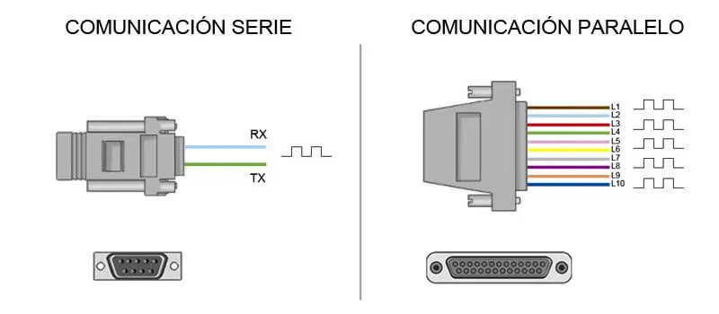
Comparación: comunicación serie (2 cables de datos) vs comunicación paralela (múltiples cables simultáneos).
El Arduino Uno y Nano tienen una unidad UART que opera a nivel TTL 0V/5V y se conecta directamente por USB al IDE. El Mega y Due tienen 4 unidades UART. Los pines RX/TX no se pueden usar como digitales mientras el puerto serie está activo.
| Placa | Puerto | RX | TX |
|---|---|---|---|
| Uno / Nano / Mini Pro | Serie 0 | 0 | 1 |
| Mega — Serie 0 | Serie 0 | 0 | 1 |
| Mega — Serie 1 | Serie 1 | 19 | 18 |
| Mega — Serie 2 | Serie 2 | 17 | 16 |
| Mega — Serie 3 | Serie 3 | 15 | 14 |
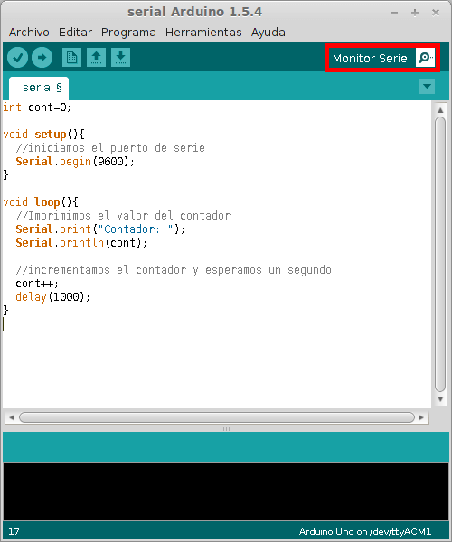
Para abrirlo: menú Herramientas → Monitor Serie, o el ícono lupa en la barra del IDE.
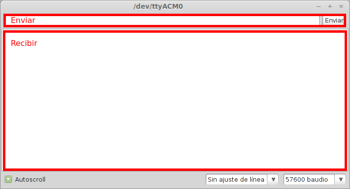
El monitor tiene dos zonas: arriba para enviar datos al Arduino, abajo para recibir lo que Arduino manda.
int cont = 0; void setup() { Serial.begin(9600); } void loop() { Serial.print("Contador: "); Serial.println(cont); cont++; delay(1000); }
int led = 13; void setup() { Serial.begin(9600); pinMode(led, OUTPUT); } void loop() { if (Serial.available() > 0) { int option = Serial.read(); if (option == 'a') { digitalWrite(led, LOW); Serial.println("OFF"); } if (option == 'b') { digitalWrite(led, HIGH); Serial.println("ON"); } } }
int led = 13; void setup() { Serial.begin(9600); pinMode(led, OUTPUT); } void loop() { if (Serial.available() > 0) { char option = Serial.read(); if (option >= '1' && option <= '9') { option -= '0'; // de char ASCII a número for (int i = 0; i < option; i++) { digitalWrite(led, HIGH); delay(100); digitalWrite(led, LOW); delay(200); } } } }
El Serial Plotter es una herramienta nativa del IDE de Arduino que convierte los números recibidos por puerto serie en gráficas en tiempo real. Se abre desde Herramientas → Serial Plotter (o Ctrl+Shift+L). Tiene un eje X (tiempo) y un eje Y que se auto-escala según los valores que recibe.
No es MATLAB ni una herramienta de análisis profesional, pero su mayor virtud es la sencillez: no hay que instalar ni configurar nada. Muy útil para ver el comportamiento de sensores analógicos, señales PWM o algoritmos de control.
void setup() { Serial.begin(9600); } void loop() { float angulo = millis() / 1000.0; float valor = sin(angulo) * 100.0; Serial.println(valor); // una variable: una línea = un punto delay(10); }
void setup() { Serial.begin(9600); } void loop() { float tiempo = millis() / 1000.0; float variable1 = sin(tiempo) * 100.0; float variable2 = cos(tiempo) * 100.0; Serial.print(variable1); Serial.print(","); // separador coma o espacio Serial.println(variable2); // salto de línea al final delay(10); }
// Formato "Etiqueta:valor" — el nombre aparece en la leyenda del Plotter Serial.print("Seno:"); Serial.print(variable1); Serial.print(","); Serial.print("Coseno:"); Serial.println(variable2);
Serial.begin(). Si no coinciden, vas a ver basura o nada en la pantalla.El bus I2C (Inter-Integrated Circuit, también llamado TWI) es un protocolo que usa solo 2 cables: SDA (datos) y SCL (reloj). Fue desarrollado por Philips en 1982 y se convirtió en estándar: acelerómetros, brújulas, displays OLED, sensores de temperatura — la mayoría de sensores modernos tienen I2C.
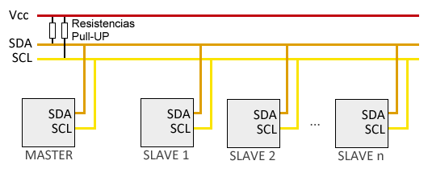
Arquitectura del bus I2C: un maestro (Arduino) y múltiples esclavos en el mismo par de cables SDA/SCL, con resistencias Pull-UP a Vcc.
Cada dispositivo tiene una dirección única de 7 bits (hasta 112 dispositivos en el mismo bus). La velocidad estándar es 100 kHz, con modo rápido de 400 kHz. Las resistencias Pull-UP internas del Arduino (20–30 kΩ) son suficientes para velocidades bajas; para mayor velocidad o distancia usá resistencias externas de 1k–4k7.
| Placa | SDA | SCL |
|---|---|---|
| Uno / Nano / Mini Pro | A4 | A5 |
| Mega | 20 | 21 |
#include <Wire.h> Wire.begin(); // inicializa el bus (como maestro) Wire.beginTransmission(address); // abre comunicación con esclavo Wire.write(dato); // envía un byte Wire.endTransmission(); // cierra la transmisión Wire.requestFrom(address, nBytes); // solicita N bytes al esclavo Wire.available(); // bytes pendientes de leer Wire.read(); // lee un byte
#include <Wire.h> void setup() { Wire.begin(); Serial.begin(9600); Serial.println("Escaneando bus I2C..."); for (byte addr = 8; addr < 120; addr++) { Wire.beginTransmission(addr); byte rc = Wire.endTransmission(); if (rc == 0) { Serial.print("Encontrado en 0x"); Serial.println(addr, HEX); } } Serial.println("Terminado"); } void loop() { delay(1000); }
El bus SPI (Serial Peripheral Interface) es un protocolo síncrono Full Duplex: el maestro puede enviar y recibir simultáneamente. Usa 4 líneas: MOSI (maestro→esclavo), MISO (esclavo→maestro), SCK (reloj) y SS/CS (selección de esclavo). Es más rápido que I2C pero requiere más cables.
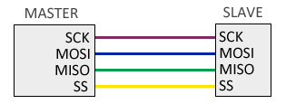
Conexión básica SPI entre maestro y un esclavo: 4 líneas (SCK, MOSI, MISO, SS).
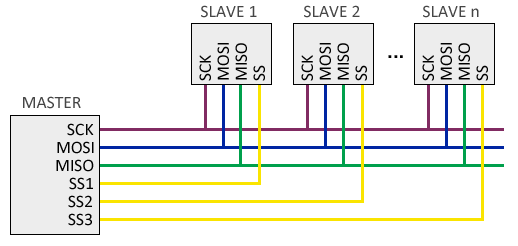
Con múltiples esclavos: SCK, MOSI y MISO se comparten, pero cada esclavo necesita su propia línea SS.
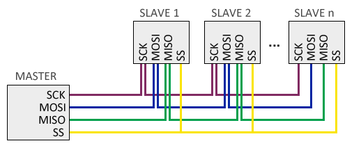
Alternativa en cascada: se usa una sola línea SS pero los datos atraviesan todos los esclavos en cadena.
| Placa | SS | MOSI | MISO | SCK |
|---|---|---|---|---|
| Uno / Nano | 10 | 11 | 12 | 13 |
| Mega | 53 | 51 | 50 | 52 |
#include <SPI.h> SPI.begin(); SPI.beginTransaction(SPISettings(2000000, MSBFIRST, SPI_MODE0)); // 2 MHz, MSB primero, modo 0 byte resp = SPI.transfer(dato); // envía y recibe 1 byte simultáneamente SPI.endTransaction(); // Modos de reloj disponibles: // SPI_MODE0: CLK idle LOW, muestreo en flanco subida // SPI_MODE1: CLK idle LOW, muestreo en flanco bajada // SPI_MODE2: CLK idle HIGH, muestreo en flanco bajada // SPI_MODE3: CLK idle HIGH, muestreo en flanco subida
Con C# y Visual Studio podés crear aplicaciones de escritorio Windows que se comuniquen con Arduino por puerto serie. C# tiene soporte nativo mediante la clase System.IO.Ports.SerialPort. Necesitás Visual Studio Community (gratuito) con .NET Framework.
El flujo es siempre el mismo: crear un objeto SerialPort, configurar puerto y velocidad, abrir la conexión, y luego usar Write() para enviar datos. La comunicación es exactamente la misma que usa el Monitor Serie del IDE.
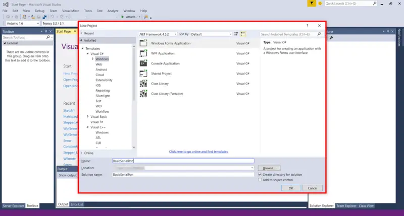
Crear proyecto: Visual Studio → New Project → Windows Forms Application → nombre "BasicSerialPort".
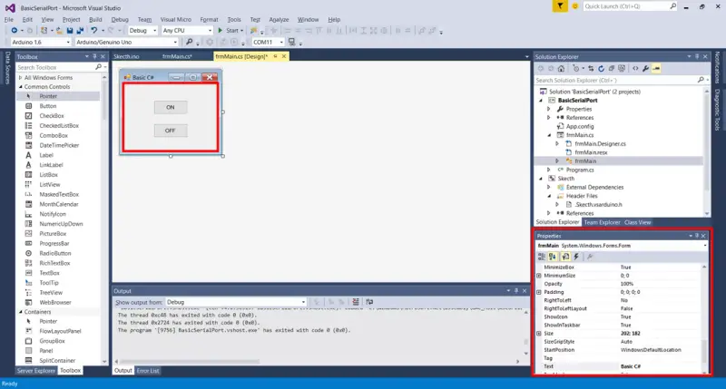
Formulario final con dos botones. Elementos: frmMain (texto "Basic C#"), btOn (texto "ON"), btOff (texto "OFF").
// frmMain.cs — C# System.IO.Ports.SerialPort ArduinoPort; public frmMain() { InitializeComponent(); ArduinoPort = new System.IO.Ports.SerialPort(); ArduinoPort.PortName = "COM4"; // cambiá por tu puerto ArduinoPort.BaudRate = 9600; ArduinoPort.Open(); this.FormClosing += FrmMain_FormClosing; this.btOFF.Click += BtOFF_Click; this.btON.Click += BtON_Click; } private void FrmMain_FormClosing(...) { if (ArduinoPort.IsOpen) ArduinoPort.Close(); } private void BtOFF_Click(...) { ArduinoPort.Write("a"); } private void BtON_Click(...) { ArduinoPort.Write("b"); }
const int pinLED = 13; void setup() { Serial.begin(9600); pinMode(pinLED, OUTPUT); } void loop() { if (Serial.available() > 0) { int option = Serial.read(); if (option == 'a') digitalWrite(pinLED, LOW); if (option == 'b') digitalWrite(pinLED, HIGH); } }
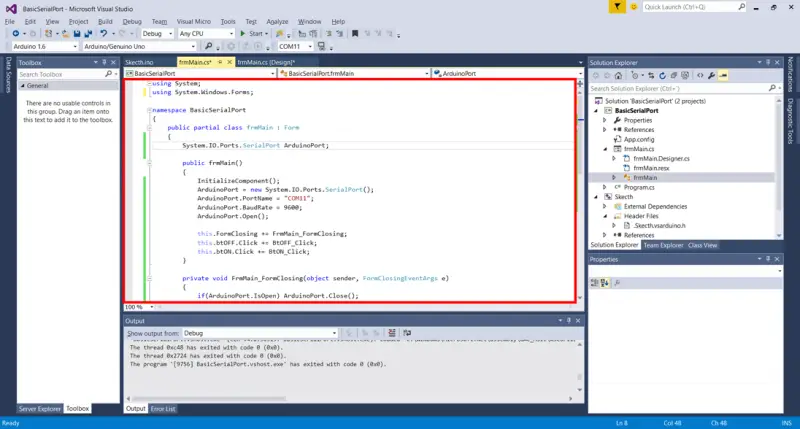
Segundo formulario: un TextBox (txNumber) y un botón "Send". Se ingresa un número entre 1 y 9 y se envía al Arduino.
private void BtSend_Click(object sender, EventArgs e) { int value; bool rst = Int32.TryParse(txNumber.Text, out value); if (rst == true && value > 0 && value < 9) ArduinoPort.Write(value.ToString()); }
Python es uno de los lenguajes más usados para IoT y automatización. Con la librería PySerial podés comunicarte con Arduino por puerto serie en pocas líneas de código. Funciona en Windows, Linux y Mac, y es perfecto para scripts de control, logging o integración con APIs.
python -m pip install PySerial
# read.py — lee lo que Arduino envía por puerto serie import serial, time arduino = serial.Serial('COM4', 9600) # cambiá COM4 por tu puerto time.sleep(2) # espera a que el puerto esté listo rawString = arduino.readline() # lee una línea print(rawString) arduino.close()
void setup() { Serial.begin(9600); } void loop() { Serial.println("Hola mundo"); delay(1000); }
# write.py — envía un número al Arduino para hacer parpadear el LED import serial, time arduino = serial.Serial("COM4", 9600) time.sleep(2) arduino.write(b'9') # write() envía bytes — usá b'...' para convertir arduino.close()
const int pinLED = 13; void setup() { Serial.begin(9600); pinMode(pinLED, OUTPUT); } void loop() { if (Serial.available() > 0) { char option = Serial.read(); if (option >= '1' && option <= '9') { option -= '0'; for (int i = 0; i < option; i++) { digitalWrite(pinLED, HIGH); delay(100); digitalWrite(pinLED, LOW); delay(200); } } } }
write() de PySerial envía bytes, no texto. Siempre precedé el string con b (ej: b'9') o usá encode(). El sleep(2) es necesario porque Arduino hace reset al abrir el puerto — si enviás datos antes de que termine el reset, los pierde.Estructura programa
▼// Estructura de un programa básico void setup() { // Inicializaciones, se ejecuta una vez al iniciar } void loop() { // Código principal, se ejecuta en bucle }
// Comentario de línea /* Bloque de comentarios Puede ocupar varias líneas */
#define LED_PIN 13 #define MAX_VAL 255 #include <Wire.h> #include "MiLibreria.h" #ifdef DEBUG // solo si DEBUG está definido #endif
Entradas y salidas
▼pinMode(pin, INPUT); // pin como entrada pinMode(pin, OUTPUT); // pin como salida pinMode(pin, INPUT_PULLUP); // entrada con pull-up interno
digitalWrite(pin, HIGH); // pone el pin en HIGH (5V) digitalWrite(pin, LOW); // pone el pin en LOW (0V) int val = digitalRead(pin); // lee HIGH o LOW
int val = analogRead(pin); // 0-1023 (resolución 10 bits) analogWrite(pin, val); // PWM: 0-255 (pines ~) analogReference(DEFAULT); // referencia voltaje ADC // DEFAULT | INTERNAL | EXTERNAL
tone(pin, frecuencia); // genera tono en Hz tone(pin, frecuencia, durMs); // tono con duración noTone(pin); // detiene tono
unsigned long dur = pulseIn(pin, HIGH); // mide duración de un pulso en microsegundos pulseIn(pin, HIGH, timeout); // con timeout en µs
Control de tiempo
▼delay(1000); // pausa 1000 ms (bloqueante) delayMicroseconds(100); // pausa 100 µs unsigned long t = millis(); // ms desde inicio (desborda ~49 días) unsigned long t = micros(); // µs desde inicio
unsigned long anterior = 0; const long intervalo = 1000; // ms void loop() { unsigned long ahora = millis(); if (ahora - anterior >= intervalo) { anterior = ahora; // código a ejecutar cada intervalo } }
Comunicación Serial
▼Serial.begin(9600); // inicia a 9600 bps Serial.print("Hola"); // imprime sin salto Serial.println("Mundo"); // imprime con salto de línea Serial.print(val, HEX); // DEC | HEX | OCT | BIN Serial.println(val, 4); // 4 decimales (float)
if (Serial.available() > 0) { // bytes disponibles char c = Serial.read(); // lee 1 byte String s = Serial.readString(); String s = Serial.readStringUntil('\n'); int n = Serial.parseInt(); // lee entero float f = Serial.parseFloat(); }
Serial.flush(); // espera fin de transmisión Serial.end(); // cierra puerto Serial.setTimeout(500); // timeout en ms para reads // Múltiples puertos (Mega/Leonardo) Serial1.begin(9600); Serial2.begin(9600);
Operadores
▼x + y x - y x * y x / y x % y // módulo
x++ x-- ++x --x
x += y x -= y x *= y x /= y x %= y
== != < > <= >= // comparación && || ! // AND, OR, NOT lógicos
& // AND bit a bit: 0b1100 & 0b1010 = 0b1000 | // OR bit a bit: 0b1100 | 0b1010 = 0b1110 ^ // XOR bit a bit: 0b1100 ^ 0b1010 = 0b0110 ~ // NOT bit a bit: ~0b1100 = 0b0011 << // shift izquierda: 1 << 3 = 8 >> // shift derecha: 16 >> 2 = 4 x &= mask; x |= mask; x ^= mask;
Tipos de datos y conversión
▼bool // true / false (1 byte) byte // 0–255 (8 bits sin signo) char // -128–127 (1 byte) int // -32768–32767 (2 bytes en Uno) unsigned int // 0–65535 long // -2,147,483,648–2,147,483,647 (4 bytes) unsigned long // 0–4,294,967,295 float // ±3.4×10³⁸ (4 bytes, 6-7 dígitos) double // igual a float en AVR Uno String // objeto cadena de texto void // sin tipo (solo para funciones)
int n = (int) myFloat; // cast C float f = (float) myInt; int(x) float(x) char(x) byte(x) long(x) word(x)
HIGH LOW // 1 / 0 digital INPUT OUTPUT INPUT_PULLUP true false LED_BUILTIN // pin del LED interno (13 en Uno) PI TWO_PI HALF_PI EULER
Arrays
▼int nums[5]; // array de 5 enteros int nums[5] = {1,2,3,4,5}; int nums[] = {10,20,30}; // tamaño automático nums[0] = 42; // asignar (índice desde 0) int x = nums[2]; // leer int tam = sizeof(nums) / sizeof(nums[0]); // cantidad de elementos
int mat[3][3] = { {1,2,3}, {4,5,6}, {7,8,9} }; mat[1][2] = 6;
const byte tabla[] PROGMEM = {0,64,128,192,255}; byte val = pgm_read_byte(&tabla[i]); // leer de Flash
Strings (cadenas de texto)
▼String s = "Hola mundo"; String s2 = String(42); // número a String String s3 = String(3.14, 2); // float, 2 decimales String s4 = s + " Arduino"; // concatenar s += "!";
s.length() // cantidad de caracteres s.charAt(0) // carácter en índice s.indexOf("ola") // posición (-1 si no existe) s.substring(2, 5) // subcadena [2,5) s.toUpperCase() // a mayúsculas (modifica s) s.toLowerCase() // a minúsculas s.trim() // elimina espacios extremos s.replace("a", "@") // reemplaza s.startsWith("Ho") // true/false s.endsWith("do") s.equals(s2) // comparar (no usar ==) s.equalsIgnoreCase(s2) s.toInt() // String a int s.toFloat() // String a float s.toCharArray(buf, len) // a char[]
Condicionales
▼if (condicion) { // si se cumple } else if (otraCondicion) { // si se cumple la segunda } else { // si ninguna se cumple }
switch (variable) { case 1: // código para valor 1 break; case 2: // código para valor 2 break; default: // si no coincide ninguno }
int max = (a > b) ? a : b; // equivale a: if (a>b) max=a; else max=b;
Bucles
▼for (int i = 0; i < 10; i++) { // se ejecuta 10 veces (i: 0..9) } // Recorrer array for (int i = 0; i < sizeof(arr)/sizeof(arr[0]); i++) { Serial.println(arr[i]); }
while (condicion) { // repite mientras sea verdad } do { // se ejecuta al menos una vez } while (condicion);
break; // sale del bucle continue; // salta al siguiente ciclo return; // sale de la función
Funciones matemáticas
▼abs(x) // valor absoluto min(x, y) // mínimo entre x e y max(x, y) // máximo entre x e y constrain(x, a, b) // limita x al rango [a,b] map(val,fMin,fMax,tMin,tMax) // remapea valor de rango pow(base, exp) // potencia sqrt(x) // raíz cuadrada sq(x) // x² (square)
sin(rad) cos(rad) tan(rad) // en radianes asin(x) acos(x) atan(x) atan2(y, x) log(x) // logaritmo natural log10(x) // logaritmo base 10 exp(x) // e^x
randomSeed(analogRead(0)); // semilla aleatoria long r = random(100); // 0 a 99 long r = random(10, 50); // 10 a 49
Funciones de usuario
▼int suma(int a, int b) { return a + b; } void parpadear(int pin, int veces) { for (int i = 0; i < veces; i++) { digitalWrite(pin, HIGH); delay(200); digitalWrite(pin, LOW); delay(200); } } // Llamadas int resultado = suma(3, 4); parpadear(13, 5);
void incrementar(int &valor) { valor++; // modifica la variable original } int n = 5; incrementar(n); // n ahora es 6
void imprimirArray(int arr[], int tam) { for (int i = 0; i < tam; i++) { Serial.println(arr[i]); } }
Tipos avanzados
▼enum Estado { ESPERAR, ENCENDER, APAGAR }; Estado estadoActual = ESPERAR; if (estadoActual == ENCENDER) { digitalWrite(13, HIGH); }
struct Sensor { int pin; float valor; bool activo; }; Sensor temp = {A0, 0.0, true}; temp.valor = analogRead(temp.pin);
typedef unsigned long ulong; typedef struct { byte r, g, b; } Color; Color rojo = {255, 0, 0};
Interrupciones
▼volatile bool triggered = false; void ISR_handler() { triggered = true; // corta, sin Serial ni delay } attachInterrupt( digitalPinToInterrupt(2), // pin (2 o 3 en Uno) ISR_handler, // función ISR RISING // RISING|FALLING|CHANGE|LOW|HIGH ); detachInterrupt(digitalPinToInterrupt(2));
// ✅ Variables compartidas deben ser volatile // ✅ ISR debe ser corta y rápida // ❌ No usar delay() dentro de ISR // ❌ No usar Serial dentro de ISR // ❌ millis() no avanza dentro de ISR
EEPROM
▼#include <EEPROM.h> byte val = EEPROM.read(0); // leer dirección 0 EEPROM.write(0, 42); // escribir byte (lento, ~3.3ms) EEPROM.update(0, 42); // escribe solo si cambia (mejor) int tamEEP = EEPROM.length(); // 1024 en Uno, 4096 en Mega
EEPROM.put(0, myFloat); // guarda float (4 bytes) EEPROM.put(4, myStruct); // guarda struct completo float f; EEPROM.get(0, f); // recupera float
Librerías útiles
▼#include <Wire.h> Wire.begin(); // maestro Wire.begin(8); // esclavo dir 8 Wire.beginTransmission(0x3C); // dirección esclavo Wire.write(dato); Wire.endTransmission(); Wire.requestFrom(0x3C, 2); // pide 2 bytes byte b = Wire.read();
#include <SPI.h> SPI.begin(); SPI.setClockDivider(SPI_CLOCK_DIV8); byte resp = SPI.transfer(dato); // envía y recibe
#include <Servo.h> Servo miServo; miServo.attach(9); // pin PWM miServo.write(90); // ángulo 0-180° int pos = miServo.read();
#include <LiquidCrystal.h> LiquidCrystal lcd(12,11,5,4,3,2); // RS,EN,D4-D7 lcd.begin(16, 2); // 16 cols, 2 filas lcd.print("Hola!"); lcd.setCursor(0, 1); // col 0, fila 1 lcd.clear();
#include <LiquidCrystal_I2C.h> LiquidCrystal_I2C lcd(0x27, 16, 2); lcd.init(); lcd.backlight(); lcd.print("Mr. Z");
#include <SoftwareSerial.h> SoftwareSerial bt(10, 11); // RX, TX bt.begin(9600); bt.println("Hola BT");